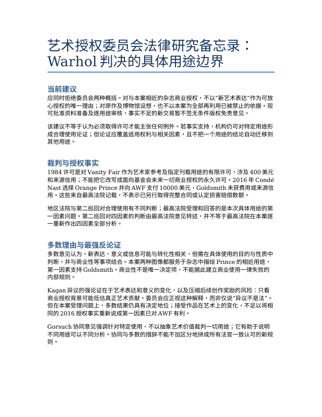
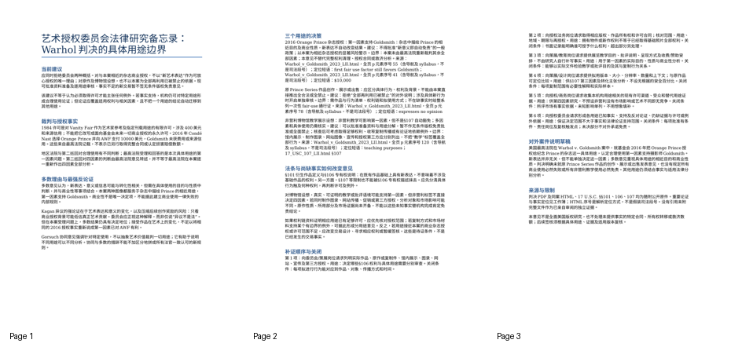
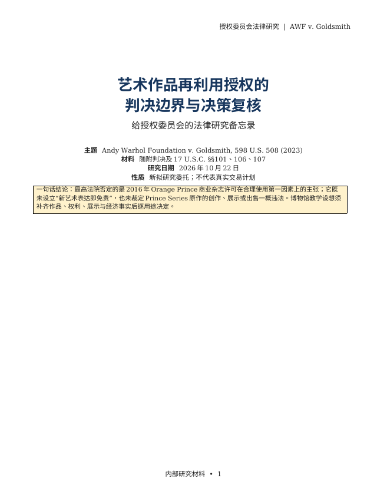
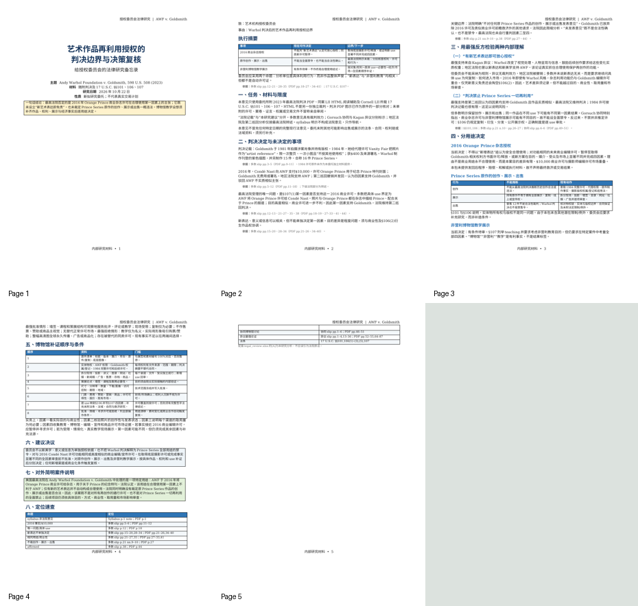
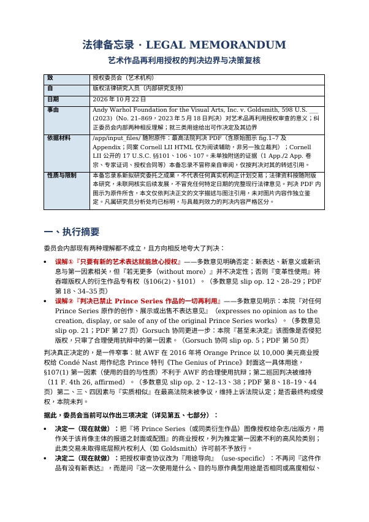
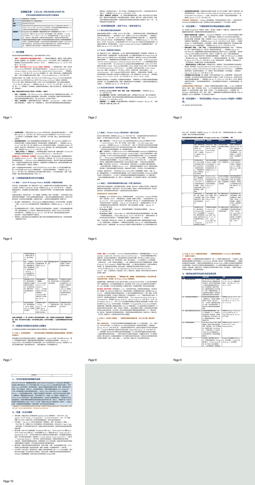

审阅草稿。GPT、Qwen各已有本题完整产物，待内容评分；Opus运行、Gold验收和实测难度尚未完成。
本轮审阅
具体用途判断有价值，论证与评分需补强
围绕真实判决及法条，区分裁判范围、不同作品用途和未决事实，要求给出有边界的授权建议及相反论证。
待完成：参考对具体行为和权利的映射、相反论证深度仍不足；可接受替代说明有跨领域模板残留。
参考答案业务复核
LAW 参考产物的来源及业务复核
版本：2186e947e8a88063，题号 LAW-1023-002。本会话 agent 实际阅读参考备忘录全文、工作簿的意见对照/法条依据/分用途意见，以及同案 HTML 的相关原文。本记录不是独立法律专家批准，不赋分、不替代外部 judge。
绑定文件
- 判决 HTML SHA256：
10e1c2bbef5190091372da7d5565bf033c2c3b310d595d482d67ea7515626479。 - 参考
legal_memo.docxSHA256：fe9413a77f3774861936689533fc0c2855f11aa17bcc8e312f52c7b9be341cd3。 - 参考
legal_review.xlsxSHA256：61c93c9db8c3ee38669f3f587eed03bd0058251cd458a6bc9a8bf9ad7a07f2d5。
实际核对的原文
HTML 的全页 p 元素从1计数，含导航及 syllabus；不是司法段号。
| 参考中的事项 | 原件位置及短语 | 复核发现 |
|---|---|---|
| 1984许可范围与400美元 | p38: No other usage right granted、$400 and a source credit；p39实际刊载及付款 |
有原文支持，参考没有将其扩大为后续全部授权 |
| 2016 Orange Prince授权 | p41: Condé Nast paid AWF $10,000、neither a fee nor a source credit |
参考区分了付款对象与未获费用的Goldsmith，没有将10000美元写成损害赔偿 |
| 第一因素与特定用途 | p55: in the context of the challenged use, the first fair use factor still favors Goldsmith |
参考没有把商业性写成唯一决定因素，也没有将新表达写成自动免责 |
| 原作创作、展示、出售的保留范围 | p78: expresses no opinion as to the creation, display, or sale |
参考没有将本案扩展为整系列一律合法或一律禁止 |
| 教学用途与具体使用 | p120: Had AWF's use been solely for teaching purposes, that clearly would affect the analysis |
原文支持“会影响分析”，不支持自动通过；参考保留事实和四因素边界 |
| 异议的表达及创作激励论证 | p188: differences in expression and meaning；p230: diminishes their incentive to create |
参考转述方向有依据，但深度仍需检查，不能因找到短语就批准完整法律论证 |
待重点复核的质量问题
- LAW09 要求具体行为与可能适用权利相对应。工作簿“法条依据”列出§106复制、衍生、分发、展示权，“分用途意见”拆分馆内展示、图录、网站及第三方授权，但尚未逐行为明确对应具体权利。备忘录仍主要说“应先分清”。这属于产物深度问题，不应以有法条清单自动判为完整，也不能据此虚构某项未来用途必然侵权。
- LAW06 的相反论证已提艺术表达及创作激励，解释多数的具体用途分析具有本案地位；但主要依赖概括，尚可更具体比较异议对
character的理解与多数对具体授权背景的解释。应由外部评分核查这是否满足题面“最有力的相反论证”，不能由出题方自动给满分。 - rubric 的可接受替代说明重复出现“替代可比口径”“同一名单”等跨领域通用句。这些措辞对法律题不够贴切。现有具体判定锚点仍明确接受不同有依据的法律建议；后续若修订，应改成用途、事实条件与法律论证的替代边界，并生成新版本，不能覆盖当前冻结rubric后沿用旧分。
当前没有修改参考、题面、rubric或任何原始输入。未据此批准Gold门槛或测定A难度。上述发现应随外部评分一并复核；如需修订参考，须保留版本和验证上下文的真实对应关系。
艺术作品再利用授权的判决边界与决策复核
你是支持艺术机构授权委员会的美国版权法律研究人员。委员会阅读了Andy Warhol Foundation v. Goldsmith案后，内部出现了两种相反理解：“只要有新的艺术表达就能放心授权”，以及“判决已经禁止Prince Series作品的一切再利用”。请根据随附判决与法条，提交能够纠正这两种理解、支持后续授权审查的法律意见。此为新拟研究委托，不代表任何真实机构正计划交易。
意见需要同时解决判决究竟决定了什么，以及委员会面对不同用途时应该如何行动。请分别处理：本案2016年Orange Prince杂志授权；原Prince Series作品的创作、展示或出售；以及委员会提出的非营利博物馆教学展示设想。第三项只有用途设想，没有完整作品清单、权利链、展示方式、收费或许可资料；不能替委员会补造这些事实。对不能下最终结论的事项，给出有顺序的资料请求和决策条件。
交付物
legal_review.xlsx：可复核的事实与授权时间线、诉讼程序和争点范围、多数/协同/异议意见对照、各用途的适用与未决问题，以及有先后顺序的补证事项。重要事实和意见均能定位到随附原件，明确哪些来自裁判、哪些是你的分析。
legal_memo.docx：给授权委员会的中文备忘录，提出当前可作出的决定及其边界。用最有力的相反论证检验建议，解释为什么采纳或不采纳，而不是仅罗列四因素或转述判决。附一段可对外使用的简明案件说明，避免把本案结论扩大成对所有艺术创作的许可或禁止。
范围与硬约束
材料位于/app/input_files/，包括2023年最高法院判决及Cornell LII公开的17 U.S.C. §§101、106、107原件。判决PDF含原始图示；同案HTML仅为阅读辅助，不是另一份独立裁判。法律资料按随附版本进行研究，不要求联网更新，也不把结论冒充任何特定日期的完整现行法律意见。
必须区分具有裁判效力的意见、协同意见、异议及判决转述的下级法院分析。没有单独附上的证据不得冒称亲自审阅；需要的事实没有提供时，应说明缺口及其对决定的影响，仍完成本包能够支持的分析。不得虚构授权条款、当事人答复、交易、诉讼结果或图片内容。
仅在/app/output/提交上述两份文件，不修改输入原件。
题面附录：完整源文件清单
源文件清单
/app/input_files/ 下的相对路径 |
内容与口径 |
|---|---|
17_USC_101_LII.html |
Cornell LII 17 U.S.C. §101定义条款。 |
17_USC_106_LII.html |
Cornell LII 17 U.S.C. §106专有权条款。 |
17_USC_107_LII.html |
Cornell LII 17 U.S.C. §107合理使用条款。 |
Warhol_v_Goldsmith_2023.pdf |
2023年最高法院判决PDF，含原始图示及各意见。 |
Warhol_v_Goldsmith_2023_LII.html |
同案Cornell LII HTML，阅读辅助，非另一独立裁判。 |
输入原件 · 5 个
| 文件 | 字节 | SHA256 |
|---|---|---|
| 17_USC_101_LII.html | 189,125 | 70e529ff783f70d7d6d315e7f8a36ec011d091b4b7df7a92de02cb4bb7c00c4e |
| 17_USC_106_LII.html | 81,724 | 674a0792b2b85ad6e8c1f144d486f1b9d704808c5f1c4810597712043a14baa3 |
| 17_USC_107_LII.html | 76,252 | dbc63d850d1f35cb8171f4431c5b8fe04a4235f9ae1e6308a43b682f102a8736 |
| Warhol_v_Goldsmith_2023.pdf | 1,767,072 | 411513bf66427db806d1fcbaeb0c37cd0f35a509eb40506f417fa275ae4e343a |
| Warhol_v_Goldsmith_2023_LII.html | 222,915 | 10e1c2bbef5190091372da7d5565bf033c2c3b310d595d482d67ea7515626479 |
参考产物
legal_memo.docx

完整正文
艺术授权委员会法律研究备忘录： Warhol 判决的具体用途边界 当前建议 “ ”应同时拒绝委员会两种概括。对与本案相近的杂志商业授权，不以 新艺术表达 作为可放 心授权的唯一理由；对原作及博物馆设想，也不以本案为全部再利用已被禁止的依据。现 可批准资料准备及逐用途审核，事实不足的新交易暂不签无条件版权免责意见。 该建议不等于认为必须取得许可才能主张任何例外。若事实支持，机构仍可对特定用途形 成合理使用论证；但论证应覆盖适用权利与相关因素，且不把一个用途的结论自动迁移到 其他用途。 裁判与授权事实 1984 许可是对Vanity Fair 作为艺术家参考及指定刊载用途的有限许可，涉及400 美元 和来源信用；不能把它改写成面向基金会未来一切商业授权的永久许可。2016 年Condé Nast 选择Orange Prince 并向AWF 支付10000 美元，Goldsmith 未获费用或来源信 用。这些来自最高法院记载，不表示已另行取得完整合同或认定损害赔偿数额。 地区法院与第二巡回对合理使用有不同判断；最高法院受理和回答的是本次具体用途的第 一因素问题。第二巡回对四因素的判断由最高法院意见转述，并不等于最高法院在本案逐 一重新作出四因素全部分析。 多数理由与最强反论证 多数意见认为，新表达、意义或信息可能与转化性相关，但需在具体使用的目的与性质中 判断，并与商业性等事项结合。本案两种图像都服务于杂志中描绘Prince 的相近用途， 第一因素支持Goldsmith。商业性不是唯一决定项，不能据此建立商业使用一律失败的 内部规则。 Kagan 异议的强论证在于艺术表达和意义的变化，以及压缩后续创作奖励的风险：只看 “ ”商业授权背景可能低估真正艺术贡献。委员会应正视这种解释，而非仅说 异议不是法 。 但在本案受理问题上，多数结果仍具有决定地位；接受作品在艺术上的变化，不足以将相 同的2016 授权事实重新说成第一因素已对AWF 有利。 Gorsuch 协同意见强调针对特定使用，不以抽象艺术价值裁判一切用途；它有助于说明 不同用途可以不同分析。协同与多数的措辞不能不加区分地拼成所有法官一致认可的新规 则。 三个用途的决策 2016 Orange Prince 杂志授权：第一因素支持Goldsmith：杂志中描绘Prince 的相 “ ”近目的及商业性质，新表达不自动改变结果。建议：不得批准 新意义即自动免责 的一般 政策；以本案为相近杂志授权的显著风险警示。边界：本案未由最高法院重新裁判其余全 部因素；本意见不替代完整权利清理、授权合同或救济分析。来源： Warhol_v_Goldsmith_2023_LII.html，全页p 元素序号55（含导航及syllabus，不 是司法段号）；定位短语：first fair use factor still favors Goldsmith； Warhol_v_Goldsmith_2023_LII.html，全页p 元素序号41（含导航及syllabus，不 是司法段号）；定位短语：$10,000 原Prince Series 作品创作、展示或出售：应区分具体行为、权利及背景，不能由本案直 “ ”接推出全合法或全禁止。建议：拒绝 全部再利用已被禁止 的对外说明；涉及具体新行为 时开启单独审核。边界：需作品与行为清单、权利链和拟使用方式；不在缺事实时给整系 列一次性fair-use 通行证。来源：Warhol_v_Goldsmith_2023_LII.html，全页p 元 素序号78（含导航及syllabus，不是司法段号）；定位短语：expresses no opinion 非营利博物馆教学展示设想：非营利教学可影响第一因素，但不是§107 自动豁免；多因 素和具体使用仍需核实。建议：可以批准准备资料与用途分解，暂不作无条件版权免责批 准或全面禁止；核查后可考虑取得足够权利、收窄复制传播或有论证地依赖例外。边界： “ ”馆内展示、制作图录、网站图像、宣传和授权第三方应分别列出，不把 教学 标签覆盖全 部行为。来源：Warhol_v_Goldsmith_2023_LII.html，全页p 元素序号120（含导航 及syllabus，不是司法段号）；定位短语：teaching purposes； 17_USC_107_LII.html §107 法条与尚缺事实如何改变意见 §101 衍生作品定义与§106 专有权说明：在既有作品基础上具有新表达，不意味着不涉及 基础作品的权利。另一方面，§107 等限制也不能被§106 专有权描述抹去。应先分清具体 行为触及何种权利，再判断许可及例外。 对博物馆设想，真实、可证明的教学或批评语境可能支持第一因素，但非营利标签不直接 决定四因素。若同时制作图录、网站传播、促销或第三方授权，分析对象和市场影响可能 不同。原作性质、所用部分及市场证据尚未齐备，不能以这些未知事实替机构完成肯定免 责结论。 如果权利链资料证明相应用途已有足够许可，应优先核对授权范围；若复制方式和市场材 料支持某个有边界的例外，可据此形成分用途意见。反之，若用途接近本案的商业杂志授 权或许可范围不足，应改变交易设计、寻求相应权利或暂缓签核。这些是待证条件，不是 已经发生的交易事实。 补证顺序与关闭 第1 项：向委员会/策展岗位请求列明实际作品、原作或复制件、馆内展示、图录、网 站、宣传及第三方授权。用途：决定哪些§106 权利与具体用途需要分别审查。关闭条 件：每项拟进行行为能对应到作品、对象、传播方式和时间。 第2 项：向授权法务岗位请求取得相应版权、作品所有权和许可合同；核对范围、用途、 地域、期限与再授权。用途：拥有物件或新作权利不等于已经取得基础照片全部权利。关 闭条件：书面记录能明确谁可授予什么权利，超出部分另处理。 第3 项：向策展/教育岗位请求提供展览教学目的、批评说明、呈现方式及收费/赞助安 排，不由研究人自行补写事实。用途：用于第一因素的实际目的、性质与商业性分析。关 闭条件：能够以实际文件检验教学或批评目的及其与复制行为关系。 第4 项：向策展/设计岗位请求提供拟用版本、大小、分辨率、数量和上下文；与原作品 可定位比较。用途：供§107 第三因素及转化主张分析，不设无根据的安全百分比。关闭 条件：每项复制范围有必要性解释和实际样本。 第5 项：向授权/商务岗位请求收集本机构用途相关的现有许可渠道、受众和替代用途证 据。用途：供第四因素研究，不预设非营利没有市场影响或艺术不同即无竞争。关闭条 件：所评市场有事实依据，未知影响单列，不用想象填补。 第6 项：向授权委员会请求形成各用途已知事实、支持及反对论证、仍缺证据与许可或例 外依据。用途：保证决定范围不大于事实和法律论证支持范围。关闭条件：每项批准有条 件、责任岗位及复核触发点；未决部分不对外承诺免责。 对外案件说明草稿 美国最高法院在Warhol v. Goldsmith 案中，就基金会2016 年把Orange Prince 授 权给纪念Prince 的杂志这一具体用途，认定合理使用第一因素支持摄影师Goldsmith。 新表达并非无关，但不能单独决定这一因素；多数意见重视具体用途的相近目的和商业性 质。判决明确未就原Prince Series 作品的创作、展示或出售发表意见，也没有规定所有 商业使用必然失败或所有非营利教学使用必然免责。其他用途仍须结合事实与适用法律分 别分析。 来源与限制 判决PDF 及同案HTML、17 U.S.C. §§101、106、107 均为随附公开原件。重要论证 与事实定位见工作簿；HTML 序号是解析定位方式，不是假装司法段号。没有引用未附 完整文件作为已亲自审阅的独立证据。 本意见不是全面美国版权研究，也不处理未提供事实的特定合同、所有权转移或救济数 额；后续签核须根据具体用途、证据及适用版本复核。
全部页面

legal_review.xlsx
阅读口径 · 6 行 × 2 列
| 项目 | 说明 |
| 性质 | 本参考是基于随附真实材料的新拟法律研究，不是特定真实交易的签核 |
| 资料版本 | 案件判决日期2023-05-18；法条为下载的公开文本；不冒充现行法律全面更新 |
| 来源定位 | 同案HTML的全页p元素序号含syllabus及其他段落，不是司法段号；同时附定位短语。PDF含图示，未改写；同案HTML不是另一独立裁判 |
| 缺少材料 | 没有单独附下级判决或完整许可合同，不声称亲自审阅；事实以最高法院转述范围为限 |
| 权限 | 多数裁判、协同、异议及本参考推论明确分开；未决用途不作肯定免责或一概禁止 |
事实授权及程序 · 8 行 × 5 列
| 时间 | 事项 | 性质 | 来源 | 不应推出的结论 |
| 1981 | Goldsmith为Newsweek拍摄Prince，形成受保护照片 | 判决转述的案件事实 | Warhol_v_Goldsmith_2023_LII.html p6、p37 | 不推断Newsweek委托转让了全部版权 |
| 1984 | Goldsmith经代理将照片授予Vanity Fair作为插图艺术家参考；400美元并署源照片信用，条款明确用途和次数限制 | 判决记载的许可条款 | Warhol_v_Goldsmith_2023_LII.html，全页p元素序号38（含导航及syllabus，不是司法段号）；定位短语：No other usage right granted | 不是提供给所有第三方、所有Prince Series及未来杂志的永久许可 |
| 1984 | Warhol制作Vanity Fair插图及其他Prince Series作品；系列共16件 | 判决转述的案件事实 | Warhol_v_Goldsmith_2023_LII.html p6、p39–40 | 创作事实不等于本案已裁判其全部合法性 |
| 2016 | Condé Nast选择Orange Prince用于纪念Prince的杂志，向AWF支付10000美元；Goldsmith未获费用或署名 | 判决转述的案件事实 | Warhol_v_Goldsmith_2023_LII.html，全页p元素序号41（含导航及syllabus，不是司法段号）；定位短语：$10,000 | 不是1984许可自然延续，也不单凭金额差认定法定损害数额 |
| 2019 | 地区法院支持AWF的fair-use抗辩并作简易判决 | 最高法院转述的下级程序 | Warhol_v_Goldsmith_2023_LII.html，全页p元素序号46（含导航及syllabus，不是司法段号）；定位短语：summary judgment | 没有单独附地区法院完整判决；不冒称已另行审阅 |
| 上诉阶段 | 第二巡回撤销，认为四因素偏向Goldsmith | 最高法院转述的下级分析 | Warhol_v_Goldsmith_2023_LII.html，全页p元素序号48（含导航及syllabus，不是司法段号）；定位短语：other three factors | 须与最高法院本次受理问题区分 |
| 2023-05-18 | 最高法院就受理的第一因素问题支持Goldsmith并维持下级结论 | 多数意见裁判结论 | Warhol_v_Goldsmith_2023_LII.html，全页p元素序号34（含导航及syllabus，不是司法段号）；定位短语：sole question presented；Warhol_v_Goldsmith_2023_LII.html，全页p元素序号55（含导航及syllabus，不是司法段号）；定位短语：first fair use factor still favors Goldsmith | 不写成最高法院独立裁判了四因素和一切Prince Series用途 |
意见对照 · 5 行 × 5 列
| 地位 | 作者 | 核心论证 | 来源 | 适用边界 |
| 多数意见 | Sotomayor | 就具体被诉用途判断目的与性质；新表达或新意义可以相关，但不足以单独决定第一因素；与照片在Prince杂志插图市场的用途相近且商业性指向Goldsmith | Warhol_v_Goldsmith_2023_LII.html，全页p元素序号55（含导航及syllabus，不是司法段号）；定位短语：first fair use factor still favors Goldsmith；Warhol_v_Goldsmith_2023_LII.html，全页p元素序号96（含导航及syllabus，不是司法段号）；定位短语：specific context of the use | 本案第一因素结论具有多数裁判地位；不等同商业用途一律失败 |
| 协同意见 | Gorsuch，Jackson加入 | 强调法律审查特定使用而非抽象评价作品艺术价值；同一作品用于其他目的可能有不同第一因素分析 | Warhol_v_Goldsmith_2023_LII.html，全页p元素序号139（含导航及syllabus，不是司法段号）；定位短语：concurring；同案HTML p139–157，writing-21-869_CONCUR_5 | 协同说明可帮助理解具体用途，但不能把全部协同措辞当多数统一规则 |
| 异议意见 | Kagan，首席大法官加入 | 最有力反论证是新作品表达与意义的差别及创作激励；质疑多数过度以商业授权场景削弱艺术转化的重要性 | Warhol_v_Goldsmith_2023_LII.html，全页p元素序号158（含导航及syllabus，不是司法段号）；定位短语：dissenting；Warhol_v_Goldsmith_2023_LII.html，全页p元素序号188（含导航及syllabus，不是司法段号）；定位短语：differences in expression and meaning | 真实相反法律论证，不是多数裁判结论；不能据其存在绕开本案第一因素结果 |
| 下级法院 | 地区法院与第二巡回 | 分别作出不同fair-use判断；本包通过最高法院意见了解其理由 | Warhol_v_Goldsmith_2023_LII.html，全页p元素序号46（含导航及syllabus，不是司法段号）；定位短语：summary judgment；Warhol_v_Goldsmith_2023_LII.html，全页p元素序号48（含导航及syllabus，不是司法段号）；定位短语：other three factors | 间接来源明确披露；未取得下级全文时不称独立完成其全部审查 |
法条依据 · 4 行 × 3 列
| 条款 | 来源文件 | 规则及边界 |
| 17 U.S.C. §101 | 17_USC_101_LII.html | derivative work定义包括以既有作品为基础并recast、transformed或adapted的形式；“有转化”不能自动排除衍生权问题 |
| 17 U.S.C. §106 | 17_USC_106_LII.html | 专有权包括复制、制作衍生作品、分发和特定公开展示，且受§§107–122等限制；物件所有权与各项版权须区分 |
| 17 U.S.C. §107 | 17_USC_107_LII.html | 用途例示不等于自动安全港；因素包括目的性质、原作性质、所用部分、对潜在市场或价值的影响，应结合具体使用评估 |
分用途意见 · 4 行 × 6 列
| 用途 | 已知事实范围 | 法律分析 | 当前决定建议 | 未决事项 | 来源 |
| 2016 Orange Prince杂志授权 | 本案已经发生的具体商业授权，判决提供主要事实 | 第一因素支持Goldsmith：杂志中描绘Prince的相近目的及商业性质，新表达不自动改变结果 | 不得批准“新意义即自动免责”的一般政策；以本案为相近杂志授权的显著风险警示 | 本案未由最高法院重新裁判其余全部因素；本意见不替代完整权利清理、授权合同或救济分析 | Warhol_v_Goldsmith_2023_LII.html，全页p元素序号55（含导航及syllabus，不是司法段号）；定位短语：first fair use factor still favors Goldsmith；Warhol_v_Goldsmith_2023_LII.html，全页p元素序号41（含导航及syllabus，不是司法段号）；定位短语：$10,000 |
| 原Prince Series作品创作、展示或出售 | 案件记载作品存在，但最高法院明确不就这些原作用途表达意见 | 应区分具体行为、权利及背景，不能由本案直接推出全合法或全禁止 | 拒绝“全部再利用已被禁止”的对外说明；涉及具体新行为时开启单独审核 | 需作品与行为清单、权利链和拟使用方式；不在缺事实时给整系列一次性fair-use通行证 | Warhol_v_Goldsmith_2023_LII.html，全页p元素序号78（含导航及syllabus，不是司法段号）；定位短语：expresses no opinion |
| 非营利博物馆教学展示设想 | 新拟用途设想，不是本案已发生事实；收费、复制、发布、市场关系和权利链未知 | 非营利教学可影响第一因素，但不是§107自动豁免；多因素和具体使用仍需核实 | 可以批准准备资料与用途分解，暂不作无条件版权免责批准或全面禁止；核查后可考虑取得足够权利、收窄复制传播或有论证地依赖例外 | 馆内展示、制作图录、网站图像、宣传和授权第三方应分别列出，不把“教学”标签覆盖全部行为 | Warhol_v_Goldsmith_2023_LII.html，全页p元素序号120（含导航及syllabus，不是司法段号）；定位短语：teaching purposes；17_USC_107_LII.html §107 |
有序补证和签核 · 7 行 × 7 列
| 顺序 | 事项 | 建议岗位非实际指派 | 请求 | 为什么需要 | 关闭条件 | 用途 |
| 1 | 具体行为与作品清单 | 委员会/策展岗位 | 列明实际作品、原作或复制件、馆内展示、图录、网站、宣传及第三方授权 | 决定哪些§106权利与具体用途需要分别审查 | 每项拟进行行为能对应到作品、对象、传播方式和时间 | 所有未决新用途 |
| 2 | 权利链和已有许可 | 授权法务岗位 | 取得相应版权、作品所有权和许可合同；核对范围、用途、地域、期限与再授权 | 拥有物件或新作权利不等于已经取得基础照片全部权利 | 书面记录能明确谁可授予什么权利，超出部分另处理 | 所有未决新用途 |
| 3 | 用途与语境资料 | 策展/教育岗位 | 提供展览教学目的、批评说明、呈现方式及收费/赞助安排，不由研究人自行补写事实 | 用于第一因素的实际目的、性质与商业性分析 | 能够以实际文件检验教学或批评目的及其与复制行为关系 | 博物馆设想 |
| 4 | 所用部分及表达 | 策展/设计岗位 | 提供拟用版本、大小、分辨率、数量和上下文；与原作品可定位比较 | 供§107第三因素及转化主张分析，不设无根据的安全百分比 | 每项复制范围有必要性解释和实际样本 | 新用途 |
| 5 | 相关许可市场与替代影响 | 授权/商务岗位 | 收集本机构用途相关的现有许可渠道、受众和替代用途证据 | 供第四因素研究，不预设非营利没有市场影响或艺术不同即无竞争 | 所评市场有事实依据，未知影响单列，不用想象填补 | 新用途 |
| 6 | 分用途签核与对外说明 | 授权委员会 | 形成各用途已知事实、支持及反对论证、仍缺证据与许可或例外依据 | 保证决定范围不大于事实和法律论证支持范围 | 每项批准有条件、责任岗位及复核触发点；未决部分不对外承诺免责 | 所有新用途 |
精确来源定位 · 14 行 × 3 列
| 证据键 | 定位 | 定位原文摘录非完整段落 |
| limited_license | Warhol_v_Goldsmith_2023_LII.html，全页p元素序号38（含导航及syllabus，不是司法段号）；定位短语：No other usage right granted | In 1984, Goldsmith, through her agency, licensed that photograph to Vanity Fair to serve as an “artist reference for an illustration” in the magazine. 1 App. 85. The terms of the license were that the illustration was “to be published in Vanity Fair November 1984 issue. It can appear one time full page and one time under one quarter page. No other usage right granted.” Ibid . Goldsmith was to receive $400 and a source credit. |
| 2016_license | Warhol_v_Goldsmith_2023_LII.html，全页p元素序号41（含导航及syllabus，不是司法段号）；定位短语：$10,000 | By that time, Warhol had died, and the Prince Series had passed to the Andy Warhol Foundation for the Visual Arts, Inc. AWF no longer possesses the works, 2 but it asserts copy- right in them. It has licensed images of the works for commercial and editorial uses. In particular, after Prince died in 2016, Condé Nast contacted AWF about the possibility of reusing the 1984 Vanity Fair image for a special edition magazine that would commemorate Prince. Once AWF informed Condé Nast about the other Prince Series images, however, Condé Nast obtained a |
| procedure | Warhol_v_Goldsmith_2023_LII.html，全页p元素序号46（含导航及syllabus，不是司法段号）；定位短语：summary judgment | The District Court granted summary judgment for AWF. 382 F. Supp. 3d 312, 316 (SDNY 2019). The court considered the four fair use factors enumerated in 17 U. S. C. §107 and held that the Prince Series works made fair use of Goldsmith’s photograph. As to the first factor, the works were “transformative” because, looking at them and the photograph “side-by-side,” they “have a different character, give Goldsmith’s photograph a new expression, and employ new aesthetics with creative and communicative results distinct from Goldsmith’s.” 382 F. Supp. |
| appeal | Warhol_v_Goldsmith_2023_LII.html，全页p元素序号48（含导航及syllabus，不是司法段号）；定位短语：other three factors | On the other three factors, the Court of Appeals found that the creative and unpublished nature of Goldsmith’s photograph favored her, id. , at 45; that the amount and substantiality of the portion taken (here, “the ‘essence’ ” of the photograph) was not reasonable in relation to the purpose of the use, id. , at 45–47; and that AWF’s commercial licensing encroached on Goldsmith’s protected market to license her photograph “to publications for editorial purposes and to other artists to create derivative works,” id. , at 48–51. 3 The court noted |
| question | Warhol_v_Goldsmith_2023_LII.html，全页p元素序号34（含导航及syllabus，不是司法段号）；定位短语：sole question presented | When Goldsmith informed AWF that she believed its use of her photograph infringed her copyright, AWF sued her. The District Court granted summary judgment for AWF on its assertion of “fair use,” 17 U. S. C. §107 , but the Court of Appeals for the Second Circuit reversed. In this Court, the sole question presented is whether the first fair use factor, “the purpose and character of the use, including whether such use is of a commercial nature or is for nonprofit educational purposes,” §107(1), weighs in favor of AWF’s recent commercial licensing |
| holding | Warhol_v_Goldsmith_2023_LII.html，全页p元素序号55（含导航及syllabus，不是司法段号）；定位短语：first fair use factor still favors Goldsmith | Here, the specific use of Goldsmith’s photograph alleged to infringe her copyright is AWF’s licensing of Orange Prince to Condé Nast. As portraits of Prince used to depict Prince in magazine stories about Prince, the original photograph and AWF’s copying use of it share substantially the same purpose. Moreover, the copying use is of a commercial nature. Even though Orange Prince adds new expression to Goldsmith’s photograph, as the District Court found, this Court agrees with the Court of Appeals that, in the context of the challenged use, the |
| limit | Warhol_v_Goldsmith_2023_LII.html，全页p元素序号78（含导航及syllabus，不是司法段号）；定位短语：expresses no opinion | Here, Goldsmith’s copyrighted photograph has been used in multiple ways: After Goldsmith licensed the photograph to Vanity Fair to serve as an artist reference, Warhol used the photograph to create the Vanity Fair illustration and the other Prince Series works. Vanity Fair then used the photograph, pursuant to the license, when it published Warhol’s illustration in 1984. Finally, AWF used the photograph when it licensed an image of Warhol’s Orange Prince to Condé Nast in 2016. Only that last use, however, AWF’s commercial licensing of Orange Pr |
| concurrence | Warhol_v_Goldsmith_2023_LII.html，全页p元素序号139（含导航及syllabus，不是司法段号）；定位短语：concurring | Justice Gorsuch , with whom Justice Jackson joins, concurring. |
| dissent | Warhol_v_Goldsmith_2023_LII.html，全页p元素序号158（含导航及syllabus，不是司法段号）；定位短语：dissenting | Justice Kagan , with whom T he Chief Justice joins, dissenting. |
| dissent_argument | Warhol_v_Goldsmith_2023_LII.html，全页p元素序号188（含导航及syllabus，不是司法段号）；定位短语：differences in expression and meaning | Start with what the statute tells us about whether the factor 1 inquiry should disregard Warhol’s creative contributions because he licensed his work. (Sneak preview: It shouldn’t.) The majority claims the text as its strong suit, viewing our precedents’ inquiry into new expression and meaning as a faulty “paraphrase” of the statutory language. Ante , at 28–30. But it is the majority, not Campbell and Google , that misreads §107(1). First, the key term “character” plays little role in the majority’s analysis. See ante , at 12–13, 22–23, and n. |
| majority_response | Warhol_v_Goldsmith_2023_LII.html，全页p元素序号96（含导航及syllabus，不是司法段号）；定位短语：specific context of the use | Granting the District Court’s conclusion that Orange Prince reasonably can be perceived to portray Prince as iconic, whereas Goldsmith’s portrayal is photorealistic, that difference must be evaluated in the context of the specific use at issue. The use is AWF’s commercial licensing of Orange Prince to appear on the cover of Condé Nast’s special commemorative edition. The purpose of that use is, still, to illustrate a magazine about Prince with a portrait of Prince. Although the purpose could be more specifically described as illustrating a maga |
| scope_relief | Warhol_v_Goldsmith_2023_LII.html，全页p元素序号119（含导航及syllabus，不是司法段号）；定位短语：2016 | 9 AWF sought a declaratory judgment that would cover the original Prince Series works, but Goldsmith has abandoned all claims to relief other than her claim as to the 2016 Condé Nast license and her request for prospective relief as to similar commercial licensing. Brief for Respondents 3, 17–18; Tr. of Oral Arg. 80–82. |
| teaching | Warhol_v_Goldsmith_2023_LII.html，全页p元素序号120（含导航及syllabus，不是司法段号）；定位短语：teaching purposes | 10 The dissent, however, focuses on a case that is not before the Court. No, not whether Francis Bacon would have made fair use of Velásquez’s painting, had American copyright law applied in Europe with a term of 300 years post mortem auctoris . But cf. post , at 32–34 (opinion of Kagan , J.). Rather, Congress has directed courts to examine the purpose and character of the challenged “use.” 17 U. S. C. §107(1) . Yet the dissent assumes that any and all uses of an original work entail the same first-factor analysis based solely on the content of |
模型产物与评分
未使用历史版本的分数。
gpt-5.6-sol
正文与表格预览
艺术作品再利用授权的 判决边界与决策复核
给授权委员会的法律研究备忘录
主题 Andy Warhol Foundation v. Goldsmith, 598 U.S. 508 (2023) 材料 随附判决及17 U.S.C. §§101、106、107 研究日期 2026年10月22日 性质 新拟研究委托；不代表真实交易计划
| 一句话结论：最高法院否定的是2016年Orange Prince商业杂志许可在合理使用第一因素上的主张；它既未设立“新艺术表达即免责”，也未裁定Prince Series原作的创作、展示或出售一概违法。博物馆教学设想须补齐作品、权利、展示与经济事实后逐用途决定。 |
致：艺术机构授权委员会
事由：Warhol判决后的艺术作品再利用授权边界
执行摘要
| 事项 | 现在可作决定 | 边界/下一步 |
| 2016商业杂志授权 | 不能凭“新艺术表达”认定可放心授权；同类新许可暂停。 | 取得底层摄影许可/释放，或证明新use显著不同并完成四因素。 |
| 原作创作、展示、出售 | 不能当全面禁令，也不能当合法性确认。 | 最高法院明示未裁；分别核查权利、许可和行为。 |
| 非营利博物馆教学展示 | 有条件待审，不作终局合理使用结论。 | 按对象/权利→具体use→必要性→经济/市场→全因素顺序补证。 |
委员会应采用两个命题：分析单位是具体利用行为，而非作品整体声誉；“新表达”与“非营利教育”均相关，但都不是自动许可证。
依据：多数slip pp.12–21、28–35（PDF pp.18–27、34–41）；17 U.S.C. §107。
一、任务、材料与限度
本意见只使用委托所附2023年最高法院判决PDF、同案LII HTML阅读辅助及Cornell LII所载17 U.S.C. §§101、106、107。HTML不是另一份独立裁判。判决PDF图示已作为原件的一部分核对；未单附的许可、案卷、证言、权属或交易文件不冒称亲自审阅。
“法院记载”与“本研究建议”分开。多数意见具有裁判效力；Gorsuch协同与Kagan异议分别标示；地区法院及第二巡回分析仅按最高法院转述。syllabus明示不构成法院意见，只作导航。
本意见不冒充任何特定日期的完整现行法意见。委托未附其他可能影响出售或展示的法条、合同、权利链或法域资料，须另行补充。
二、判决决定与未决定的事项
判决记载：Goldsmith于1981年拍摄涉案肖像并持有版权。1984年，她经代理许可Vanity Fair把照片作为“artist reference”，限一次整页、一次小图且“不授其他使用权”；获$400及来源署名。Warhol制作刊登的紫色插图，并另制作15件，合称16件Prince Series。
依据：多数slip pp.3–5（PDF pp.9–11）。1984许可原件未作为本委托独立材料提供。
2016年，Condé Nast向AWF支付$10,000，许可Orange Prince用于纪念Prince特刊封面；Goldsmith无费用或署名。地区法院支持AWF；第二巡回撤销并发回，认为四因素支持Goldsmith，并驳回AWF不实质相似主张。
依据：多数slip pp.5–12（PDF pp.11–18）；下级法院部分为转述。
最高法院受理的唯一问题，是§107(1)第一因素是否支持这一2016商业许可。多数把具体use界定为AWF将Orange Prince许可给Condé Nast。照片与Orange Prince都在杂志中描绘Prince、配合关于Prince的报道；目的高度相似，商业许可进一步不利。因此第一因素支持Goldsmith，法院维持第二巡回判决。
依据：多数slip pp.12–13、21–27、35、38（PDF pp.18–19、27–33、41、44）。
新表达、意义或信息可以相关，但不能单独决定第一因素。目的差异是程度问题，须与商业性及§106(2)衍生作品权协调。
依据：多数slip pp.15–20、28–34（PDF pp.21–26、34–40）。
关键边界：法院明确“不对任何原Prince Series作品的创作、展示或出售发表意见”。Goldsmith已放弃除2016许可及类似商业许可前瞻救济外的其他请求，法院因此限缩分析。“未发表意见”既不是合法性确认，也不是禁令。最高法院也未自行重判因素二至四。
依据：多数slip p.21 nn.9–10、p.38（PDF pp.27、44）。
三、用最强反方检验两种内部理解
（一）“有新艺术表达即可放心授权”
最强支持来自Kagan异议：Warhol改变了视觉处理、人物呈现与信息，鼓励后续创作要求给这些变化实质权重；地区法院也曾以新表达和新美学支持AWF。该论证真实抓住合理使用保护再创作的功能。
但委员会不能采纳为规则。异议无裁判效力，地区法院被撤销；多数并未说新表达无关，而是要求继续问具体use为何复制、如何进入市场。2016年即使有Warhol风格，杂志利用功能仍与Goldsmith编辑许可重合。仅凭新意义免责还会掏空§106(2)。因此，艺术差异须记录，但不能越过目的、商业性、取用量和市场审查。
（二）“判决禁止Prince Series一切再利用”
最强支持是第二巡回认为四因素均支持Goldsmith且作品实质相似，最高法院又维持判决；1984许可按判决记载也很有限。这足以说明风险。
但多数明示保留创作、展示和出售；同一作品在不同use下可能有不同第一因素结果。Gorsuch协同特别指出，商业杂志许可与非营利博物馆展示可能有不同目的。故不能设全面禁令。反过来，不禁并非推定许可：§106仍规定复制、衍生、分发、公开展示权。正确制度是逐use审批。
依据：§§101,106；多数slip p.21 n.10、pp.26–27；协同slip pp.4–6（PDF pp.49–51）。
四、分用途决定
2016 Orange Prince杂志授权
当前决定：不得以“新增表达”追认为安全合理使用；对功能相同的未来商业编辑许可，暂停至取得Goldsmith相关权利方书面许可/释放，或新方案在目的、媒介、受众及市场上显著不同并完成四因素。理由不是商业用途永不合理使用，而是本案目的差异有限、$10,000商业许可与摄影师编辑许可市场重叠。
本包未提供发回后程序、赔偿、和解或执行材料，故不声称最终救济或交易结果。
Prince Series原作的创作、展示、出售
| 行为 | 不能推断 | 现有动作 |
| 创作 | 不能从最高法院判决推断历史创作合法或违法。 | 索取1984完整许可、代理权限、逐件制作事实、摄影版权权属/登记和适用法。 |
| 展示 | 持有原作不等于拥有全部展示、复制、线上或宣传权。 | 拆分现场、投影、墙签、目录、网站、社媒、广告并逐项审查。 |
| 出售 | 曾售12件不是合法性裁判；Warhol判决也不是禁售令。 | 核对物权链、实体与版权边界、合同保证及未附法定限制/例外。 |
§101与§106说明，实体物所有权与版权不是同一问题。由于本包未含其他潜在限制/例外，委员会应要求补充研究，而非补造条件。
非营利博物馆教学展示
当前决定：有条件待审。§107列举teaching并要求考虑非营利教育目的，但仍要求在特定案件中考量全部四因素。“博物馆”“非营利”“教学”是有利事实，不是结果标签。
最强批准情形：墙签、课程和策展结构可观察地服务批评、评论或教学；现场受限；复制仅为必要；不作售票、赞助或商品主视觉；无替代正常许可市场。最强拒绝情形：教学仅为名义，实际用形象吸引购票/赞助；整幅高清图全球永久传播、广告或商品化；存在被替代的同类许可。现有事实不足以在两端间选择。
五、博物馆补证顺序与条件
| 顺序 | 资料 | 门槛 |
| 1 | 逐件清单：标题、版本、媒介、年份、原件/复制、底层图像。 | 与展签和素材编号100%对应，否则暂停。 |
| 2 | 实体物权、AWF权限、Goldsmith权属/登记、1984完整许可和后续许可。 | 每项权利有文件来源、范围、期限；判决摘要不替代合同。 |
| 3 | 拆分现场、投影、讲义、图录、网站、社媒、新闻稿、广告、售票、存档、商品。 | 每个渠道、文件、受众独立成行；新增use回审。 |
| 4 | 策展论点、墙签、课程及取用必要性。 | 目的须由观众实际接触的内容验证。 |
| 5 | 尺寸、分辨率、数量、下载/直播、访问控制、期限、地域。 | 技术范围冻结并写入批准。 |
| 6 | 门票、费用、赞助、营销、商品；许可可得性、报价、既有市场。 | 财务/市场确认；权利人沉默不视为许可。 |
| 7 | 逐use映射§106并写§107四因素；补充未附法条、法域、合同与救济研究。 | 许可覆盖则按许可；否则须有完整签字法律结论。 |
| 8 | 批准、限缩、寻求许可或拒绝，列全部操作条件。 | 用途漂移、素材变化或商业合作自动触发复核。 |
实务上，因素一看实际目的与商业性；因素二核验照片的创作性与发表状态；因素三说明每个渠道的取用量为何必要；因素四收集教育、博物馆、编辑、宣传和商品许可市场证据。若事实接近2016商业编辑许可，应暂停并寻求许可；若为受限、情境化、真实教学现场展示，第一因素可能不同，但仍须完成其余因素与补充法源。
六、建议决议
| 委员会不以新美学、意义或信息为单独授权依据，也不把Warhol判决解释为Prince Series全部用途的禁令。对与2016 Condé Nast许可功能相同或高度相似的商业编辑/宣传许可，在取得底层摄影许可或完成事实显著不同的全因素审查前不批准。对原作创作、展示、出售及非营利教学展示，按具体作品、权利和use补证后分别决定；任何新增渠道或商业化条件触发复核。 |
七、对外简明案件说明
| 美国最高法院在Andy Warhol Foundation v. Goldsmith中处理的是一项特定用途：AWF于2016年将Orange Prince商业许可给杂志，用于关于Prince的纪念特刊。法院认定，该用途在合理使用第一因素上不利于AWF；仅有新的艺术表达并不自动构成合理使用。法院同时明确没有裁定原Prince Series作品的创作、展示或出售是否合法。因此，该案既不是对所有再创作的通行许可，也不是对Prince Series一切再利用的全面禁止；后续项目仍须依具体目的、方式、商业性、取用量和市场影响审查。 |
八、定位速查
| 命题 | 定位 |
| syllabus非法院意见 | Syllabus p.1 note；PDF p.1 |
| 2016事实/$10,000 | 多数slip pp.5–6；PDF pp.11–12 |
| 唯一问题/具体use | 多数slip p.12；PDF p.18 |
| 新表达不单独决定 | 多数slip pp.15–20,28–34；PDF pp.21–26,34–40 |
| 相同用途/商业性 | 多数slip pp.21–27,35；PDF pp.27–33,41 |
| 不裁创作、展示、出售 | 多数slip p.21 nn.9–10；PDF p.27 |
| affirmed | 多数slip p.38；PDF p.44 |
| 协同博物馆讨论 | 协同slip pp.1–6；PDF pp.46–51 |
| 异议最强论证 | 异议slip pp.1–4,13–36；PDF pp.52–55,64–87 |
| 法条 | 17 U.S.C. §§101,106(1)–(3),(5),107 |
配套legal_review.xlsx的[A]为本研究分析，不应误引为法院原话。

模型文档全部页面

00_使用说明 · 9 行 × 5 列
| 授权复核工作簿 | ||||
| 仅依据随附判决与17 U.S.C. §§101、106、107；判决HTML仅为阅读辅助。定位同时标示意见内部slip页与PDF文件页。 | ||||
| 项目 | 内容 | 权威/状态 | 如何复核 | 注意事项 |
| 核心结论 | 本案既非“有新艺术表达即可授权”，也非“Prince Series一切再利用均被禁止”。 | [C]+[A] | 见03、04表 | 合理使用按具体被挑战的use分析。 |
| 2016授权 | Orange Prince用于纪念Prince商业杂志；第一因素不利AWF。 | [C] 多数意见 | 多数slip pp.12,21–27,38；PDF pp.18,27–33,44 | 最高法院未逐项重判全部四因素。 |
| 原作边界 | 法院明确不对Prince Series原作的创作、展示或出售发表意见。 | [C] 明示保留 | 多数slip p.21 nn.9–10；PDF p.27 | “未裁定”不是合法，也不是违法。 |
| 博物馆设想 | 非营利教学相关但不自动合理使用；事实不足，须补证。 | [STAT]+[A] | §107；见05表 | 不得用机构身份替代实际用途和市场分析。 |
| 来源标签 | [C]多数；[CON]协同；[D]异议；[LOWER]下级法院分析；[S]syllabus；[STAT]法条；[A]本研究；[GAP]缺口。 | 方法 | 逐行看来源和定位 | syllabus不构成法院意见（PDF p.1）。 |
| 版本范围 | 按随附版本研究，不冒充任何特定日期完整现行法律意见。 | 范围限制 | 见备忘录第一节 | 未附其他潜在例外、合同、登记、权利链。 |
01_事实授权时间线 · 15 行 × 7 列
| 事实与授权时间线 | ||||||
| “判决记载”不等于研究人员亲自审阅未附证据。 | ||||||
| 时间 | 事件/用途 | 标的 | 对价/署名 | 法律相关性 | 来源性质 | 定位 |
| 1981 | Goldsmith受Newsweek委托拍摄Prince；涉案黑白工作室肖像由其保留并持有版权。 | Goldsmith照片 | 未载 | 原作及许可市场背景。 | [C] 判决记载 | 多数slip pp.3–4；PDF pp.9–10 |
| 1984 | 经代理许可Vanity Fair把照片作为“artist reference”；限1984年11月号一次整页、一次小图；“No other usage right granted.” | Goldsmith照片 | $400及source credit | 有限许可；不能假设覆盖另15件或2016。 | [C] 判决引述案卷 | 多数slip p.3；PDF p.9 |
| 1984 | Warhol制作紫色丝网插图并随Prince文章刊登。 | 获授权插图 | Warhol报酬未载 | 不是最高法院所审2016 use。 | [C] 判决记载 | 多数slip pp.3–4；PDF pp.9–10 |
| 1984 | 另制作15件；连同紫色作品合称16件Prince Series。 | 13幅丝网、2幅铅笔画等 | 未载 | 创作合法性未裁。 | [C] 判决记载 | 多数slip pp.4–5；PDF pp.10–11 |
| Warhol去世后 | 系列转至AWF；判决称售12件，余4件交Warhol Museum保管；AWF主张系列版权。 | 原作/图像 | 交易条款未载 | 事实叙述不是合法性裁判。 | [C] 判决记载 | 多数slip p.5 n.2；PDF p.11 |
| 2016 | Condé Nast获Orange Prince许可，用于纪念特刊封面。 | Orange Prince图像 | $10,000给AWF；Goldsmith无费用/署名 | 最高法院所审具体use。 | [C] 判决记载 | 多数slip pp.5–6；PDF pp.11–12 |
| 2016 | Goldsmith知悉系列并通知AWF其认为侵权。 | 争议图像 | 无 | 诉讼触发。 | [C] 判决记载 | 多数slip pp.5,9；PDF pp.11,15 |
| 诉讼启动 | AWF请求不侵权或合理使用确认；Goldsmith反诉。 | 争议use | 无 | 程序姿态。 | [C] 判决记载 | 多数slip p.9；PDF p.15 |
| 2019 | 地区法院对AWF作简易判决，四因素均支持AWF。 | Prince Series | 无 | 后被撤销。 | [LOWER] 转述 | 多数slip pp.9–10；PDF pp.15–16 |
| 2021 | 第二巡回撤销并发回；四因素支持Goldsmith；驳回不实质相似主张。 | 争议许可 | 无 | 最高法院只受理第一因素。 | [LOWER] 转述 | 多数slip pp.10–12；PDF pp.16–18 |
| 2022-10-12 | 最高法院言词辩论。 | 第一因素 | 无 | 程序节点。 | [C] 判决封面 | PDF p.1 |
| 2023-05-18 | 最高法院：2016商业许可第一因素支持Goldsmith；维持第二巡回。 | Orange Prince许可 | 无 | 不裁原作创作、展示、出售。 | [C] 裁判 | 多数slip pp.12,21,38；PDF pp.18,27,44 |
02_程序与争点范围 · 10 行 × 7 列
| 诉讼程序、裁判事项与保留事项 | ||||||
| 拆分各层级实际处理，避免把“affirm”改写成最高法院自行重做四因素。 | ||||||
| 层级/事项 | 处理问题 | 结论 | 效力/权重 | 明确未决定 | 委员会用途 | 定位 |
| 地区法院 | Prince Series合理使用四因素。 | 支持AWF。 | [LOWER] 后被撤销。 | — | 不可当当前安全港。 | 多数slip pp.9–10；PDF pp.15–16 |
| 第二巡回 | 四因素及实质相似。 | 撤销发回；四因素支持Goldsmith；驳回AWF主张。 | [LOWER] 下级法院结论。 | Jacobs协同：未决定是否影响原作。 | 同类商业编辑许可强烈不利，但非全面禁令。 | 多数slip pp.10–12；PDF pp.16–18 |
| 最高法院问题 | §107(1)是否支持2016商业许可。 | 否；目的相似，商业性加重不利。 | [C] 7–2多数。 | 未受理因素2–4；AWF未挑战实质相似。 | 相同用途不得凭新表达批准。 | 多数slip pp.12,38；PDF pp.18,44 |
| 最高法院对象 | 具体use：许可Orange Prince给Condé Nast。 | 第一因素支持Goldsmith。 | [C] use-specific。 | 不对原作创作、展示、出售发表意见。 | 每个新use重新审查。 | 多数slip p.21 nn.9–10；PDF p.27 |
| 救济范围 | Goldsmith放弃除2016许可及类似商业许可前瞻救济外的其他请求。 | 法院相应限缩。 | [C] 范围说明，基础为未附当事人材料。 | 原作三类行为。 | 弃权不代表实体合法。 | 多数slip p.21 n.9；PDF p.27 |
| Disposition | 维持第二巡回判决。 | Affirmed。 | [C] 裁判。 | 未附其后发回、赔偿、和解。 | 不得虚构后续结果。 | 多数slip p.38；PDF p.44 |
| Syllabus | 便利性概述。 | 概述holding。 | [S] 非法院意见。 | 不能作裁判理由。 | 只作导航。 | PDF p.1 note |
03_意见对照 · 9 行 × 7 列
| 多数、协同与异议意见对照 | ||||||
| 协同与异议不能标作多数规则。 | ||||||
| 议题 | 多数意见（7票） | Gorsuch协同（Jackson加入） | Kagan异议（首席大法官加入） | 委员会口径 | 来源 | 定位 |
| 分析单位 | 具体被挑战use：2016许可。 | 强调看被告如何使用原作及目的。 | 认为多数低估作品自身转化。 | 采用use-specific多数口径。 | [C]/[CON]/[D] | 多数slip pp.12–13,21；协同1–4；异议1–4 |
| 新表达 | 相关但不单独决定；否则吞没衍生作品权。 | 文本导向，目的随use变化。 | 新美学、意义应强力支持AWF。 | 记录差异但继续比较目的。 | [C]/[CON]/[D] | 多数slip pp.15–20,28–34；PDF pp.21–26,34–40 |
| 目的/商业性 | 杂志描绘Prince的用途相似；商业性在差异小时更重。 | 同意聚焦实际许可。 | 批评商业性压倒新表达。 | 同主题、功能、客户、市场且收费时暂停。 | [C]/[CON]/[D] | 多数slip pp.21–27,35；协同4–6；异议19–23 |
| 评论原作 | 不是所有合理使用的必要条件，但可证明不同目的。 | 同意依法看目的。 | 认为多数过度偏向targeting。 | 不设硬门槛，作为强事实。 | [C]/[CON]/[D] | 多数slip pp.17–20,34；异议24–35 |
| 博物馆 | 不裁原作展示；不同use可有不同结果。 | 非营利博物馆评论20世纪艺术可能不同，仍须全因素。 | 担忧寒蝉展示。 | 有可辩空间但非预先批准。 | [C]/[CON]/[D]+[A] | 多数slip p.21 n.10,26–27；协同4–6 |
| 结论边界 | 仅判2016许可第一因素；不裁创作、展示、出售。 | 强调狭窄性。 | 第一因素应支持AWF。 | 对外说明必须同时写两端。 | [C]/[CON]/[D] | 多数slip pp.12,21,38；PDF pp.18,27,44 |
04_用途决策 · 8 行 × 9 列
| 各用途：当前决定、适用与未决事项 | ||||||||
| 动作是现有材料下的风控建议，不冒充对未裁事实的司法判决。 | ||||||||
| 用途 | 当前动作 | 相关规则 | 最强批准论证 | 最强拒绝论证 | 本研究评估 | 缺口 | 决策条件 | 定位 |
| 2016 Orange Prince杂志授权 | 不可按“新增表达”认定安全；同类新许可暂停。 | §107第一因素；最高法院holding。 | 新美学和信息；异议支持AWF。 | 同为商业杂志中描绘Prince，且市场重叠。 | 拒绝“放心授权”；但不虚构最终赔偿或结案。 | 后续程序、协议未附。 | 取得底层许可/释放，或事实显著不同并完成四因素。 | 多数slip pp.12,21–27,35,38 |
| 原作创作 | 不作合法/违法终局认定。 | §106(1),(2)、§107；明示未裁。 | 新表达；异议与地区法院支持。 | 1984许可有限；另15件；衍生权。 | “no opinion”不是许可。 | 完整许可、权属、逐件事实、法域。 | 权利链覆盖或完成适用法分析。 | 多数slip pp.3–5,21 nn.9–10 |
| 原作展示 | 按项目待审；拆分现场、复制、线上、宣传。 | §101 display；§106(5)；§107。 | 真实教学/评论与受限展示。 | 展示权独立；附带复制会扩大风险。 | 不一概禁止；批准须逐渠道。 | 见05全部A/B/C项。 | 许可覆盖或完整四因素及补充法源。 | 多数slip p.21 n.10；协同4–6 |
| 原作出售 | 不作全面禁售；不出无条件清洁意见。 | §106(3)；明示未裁；其他法源未附。 | 判决记载曾售12件。 | 事实叙述非合法裁判；物权≠版权。 | 不得把曾出售当先例或判决当禁售令。 | 作品物权链、版权范围、合同、法域。 | 物权/版权边界与适用例外确认。 | 多数slip p.5 n.2,p.21 n.10 |
| 非营利博物馆教学展示 | 有条件待审；按05顺序补证。 | §107 teaching/非营利只是相关因素。 | 真实教学、必要取用、受限展示、无替代市场。 | 名义教育但营销、商品化、高分辨传播或市场替代。 | 两阶段审查，不凭机构标签批准。 | 清单、权利链、方式、收费、许可市场。 | 门槛齐备后逐use四因素；许可覆盖则按许可。 | §107；多数slip pp.12–20,26–27；协同4–6 |
05_博物馆补证 · 14 行 × 8 列
| 博物馆教学展示：顺序资料请求与门槛 | |||||||
| 前一事实门槛未满足，不进行抽象“转化性”投票。 | |||||||
| 顺序 | 资料请求 | 原因 | 有利答案 | 不利/缺失 | 门槛 | 输出 | 依据 |
| A1 | 逐件清单：标题、版本、媒介、年份、原件/复制、底层图像。 | 识别对象和取用内容。 | 建立逐件矩阵。 | 无法识别即暂停。 | 清单与素材编号100%对应。 | 策展/登记签字清单。 | [GAP]；§107 particular case |
| A2 | 物权/版权链：所有人、保管、AWF权限、Goldsmith权属/登记、授权。 | 物权、二次版权、底层版权不同。 | 许可覆盖则转合规审查。 | 权限不明不得承诺清洁权利。 | 每项权利有文件范围期限。 | 权利链表+协议。 | §101；§106 |
| A3 | 1984完整许可、代理授权、附件往来。 | 本研究未亲审证据。 | 明确覆盖则按文本。 | 有限许可使风险上升。 | 不得用判决摘要代合同。 | 合同摘要附原件页码。 | 多数slip p.3 / PDF p.9 |
| B1 | 拆use：现场、墙签、讲义、投影、目录、网站、社媒、新闻稿、广告、售票、存档、商品。 | Warhol按具体use。 | 可只批准低风险渠道。 | “一个展览”不足。 | 每渠道/受众独立成行。 | 用途矩阵+样张。 | 多数slip pp.12–13,21 |
| B2 | 教学目标、策展论点、墙签/课程、使用必要性。 | 验证非装饰或名人吸引。 | 可观察的具体教学目的。 | 事后标签或仅称新意义不足。 | 目的由观众接触材料证明。 | 策展说明+课程计划。 | §107；多数slip pp.15–20 |
| B3 | 尺寸、分辨率、数量、裁切、下载、直播、访问控制、期限、地域。 | 关联权利和第三因素。 | 必要、受限可降低风险。 | 整幅高清、永久全球访问增风险。 | 技术规格冻结入批准范围。 | 图像使用规范。 | §§106,107(3) |
| C1 | 门票、费用、会员、赞助、广告、商品、图录、主视觉。 | 非营利主体仍可有商业use。 | 免费/成本回收且非营销。 | 营销、赞助、商品化增商业性。 | 财务确认全部收入关联。 | 经济说明。 | §107(1)；多数slip pp.20–25 |
| C2 | 许可可得性、报价、既有教育/编辑许可和市场证据。 | 第四因素与重叠市场。 | 无合理市场且目的明显不同。 | 替代成熟许可市场风险增。 | 联系适格权利人；沉默非许可。 | 许可日志/市场备忘。 | §107(4)；多数slip pp.22–25 |
| D1 | 逐use四因素书面分析并映射§106权利。 | 不能只凭新表达/非营利。 | 整体支持则入批准条件。 | 事实未知则待审；近似2016则暂停。 | 法律/策展/权利/业务签字。 | 决策记录。 | §§106,107 |
| D2 | 补充未附法条、法域、合同、救济与现行法研究。 | 本包范围有限。 | 独立法源覆盖则限缩批准。 | 无法确认不以推测填补。 | 列适用法与截至日期。 | 补充意见/许可方案。 | [GAP] 范围限制 |
| E1 | 决定并列作品、渠道、期限、技术限制、复核触发。 | 防用途漂移。 | 只批准记录中的use。 | 新增渠道/商业条件回审。 | 条件写入操作单。 | 最终授权决议。 | [A] use-specific方法 |
06_法源定位 · 15 行 × 6 列
| 法源与定位索引 | |||||
| PDF页与slip页并列；HTML只辅助搜索。 | |||||
| 法源 | 命题 | 层级 | 定位 | 文件 | 提示 |
| 17 U.S.C. §101 | derivative work、display、publication、publicly、transfer定义。 | [STAT] | 对应定义段 | 17_USC_101_LII.html | 物权转移不当然转移版权。 |
| 17 U.S.C. §106 | 复制、衍生、分发、公开展示专有权，受§§107–122限制。 | [STAT] | §106(1),(2),(3),(5) | 17_USC_106_LII.html | 先识别权利再分析限制。 |
| 17 U.S.C. §107 | 教学等可能合理使用；个案四因素；非营利教育只是因素一部分。 | [STAT] | 序言及(1)–(4) | 17_USC_107_LII.html | 无自动免责。 |
| Warhol多数 | 唯一问题及具体use。 | [C] | slip p.12；PDF p.18 | 核心holding。 | |
| Warhol多数 | 新表达不单独决定第一因素。 | [C] | slip pp.15–20,28–35；PDF pp.21–26,34–41 | 纠正“新表达即可”。 | |
| Warhol多数 | 目的相似与许可市场。 | [C] | slip pp.21–27；PDF pp.27–33 | 限于具体use。 | |
| Warhol多数 | 不裁原作创作、展示、出售。 | [C] | slip p.21 nn.9–10；PDF p.27 | 纠正“全面禁止”。 | |
| Warhol多数 | 第一因素支持Goldsmith；affirmed。 | [C] | slip p.38；PDF p.44 | 勿写成最高法院重判全部因素。 | |
| Gorsuch协同 | 实际use；博物馆展示可能不同。 | [CON] | slip pp.1–6；PDF pp.46–51 | 说服性，仍须全因素。 | |
| Kagan异议 | 新美学/意义应支持AWF，警告寒蝉。 | [D] | slip pp.1–4,13–36；PDF pp.52–55,64–87 | 最强反方，非规则。 | |
| Syllabus | Reporter摘要，非法院意见。 | [S] | p.1 note；PDF p.1 | 仅导航。 | |
| 判决HTML | 同案阅读辅助。 | 辅助 | 对应文本 | Warhol_v_Goldsmith_2023_LII.html | 不是第二份裁判。 |
qwen3.8-max
正文与表格预览
法律备忘录 · LEGAL MEMORANDUM
艺术作品再利用授权的判决边界与决策复核
| 致 | 授权委员会（艺术机构） |
| 自 | 版权法律研究人员（内部研究支持） |
| 日期 | 2026年10月22日 |
| 事由 | Andy Warhol Foundation for the Visual Arts, Inc. v. Goldsmith, 598 U.S. ___ (2023)（No. 21–869，2023年5月18日判决）对艺术品再利用授权审查的意义；纠正委员会内部两种相反理解；就三类用途给出可作决定及其边界 |
| 依据材料 | /app/input_files/ 随附原件：最高法院判决 PDF（含原始图示 fig.1–7 及 Appendix；同案 Cornell LII HTML 仅为阅读辅助，非另一独立裁判）；Cornell LII 公开的 17 U.S.C. §§101、106、107。未单独附送的证据（1 App./2 App. 卷宗、专家证词、授权合同等）本备忘录不冒称亲自审阅，仅按判决对其的转述引用。 |
| 性质与限制 | 本备忘录系新拟研究委托之成果，不代表任何真实机构正计划交易；法律资料按随附版本研究，未联网核实后续发展，不冒充任何特定日期的完整现行法律意见。判决 PDF 内图示为原件所含，本文仅依判决正文的文字描述与图注引用，未对图片内容作独立鉴定。凡属研究员分析处均已标明，与具裁判效力的判决内容严格区分。 |
一、执行摘要
委员会内部现有两种理解都不成立，且方向相反地夸大了判决：
误解①『只要有新的艺术表达就能放心授权』——多数意见明确否定：新表达、新意义或新讯息与第一因素相关，但『若无更多（without more）』并不决定性；否则『变革性使用』将吞噬版权人的衍生作品专有权（§106(2)、§101）。（多数意见 slip op. 12、28–29；PDF 第18、34–35页）
误解②『判决已禁止 Prince Series 作品的一切再利用』——多数意见明示：本院『对任何 Prince Series 原作的创作、展示或出售不表达意见』（expresses no opinion as to the creation, display, or sale of any of the original Prince Series works）。（多数意见 slip op. 21；PDF 第27页）Gorsuch 协同更进一步：本院『甚至未决定』该图像是否侵犯版权，只审了合理使用抗辩中的第一因素。（Gorsuch 协同 slip op. 5；PDF 第50页）
判决真正决定的，是一件窄事：就 AWF 在 2016 年将 Orange Prince 以 10,000 美元商业授权给 Condé Nast 用作纪念 Prince 特刊《The Genius of Prince》封面这一具体用途，§107(1) 第一因素（使用的目的与性质）不利于 AWF 的合理使用抗辩；第二巡回判决被维持（11 F. 4th 26, affirmed）。（多数意见 slip op. 2、12–13、38；PDF 第8、18–19、44页）第二、三、四因素与『实质相似』在最高法院未被争议，维持上诉法院认定；是否最终构成侵权，本院未判。
据此，委员会当前可以作出三项决定（详见第五、七部分）：
决定一（现在就做）：把『将 Prince Series（或同类衍生作品）图像授权给杂志/出版方，用作关于该肖像主体的报道之封面或配图』的商业授权，列为推定第一因素不利的高风险类别；此类交易未取得底层照片权利人（如 Goldsmith）许可前不予放行。
决定二（现在就做）：把授权审查协议改为『用途导向』（use-specific）：不再问『这件作品有没有新表达』，而是问『这一次使用是什么、目的与原作典型用途是否相同或高度相似、是否商业、有无独立正当化』。同一件作品，不同用途结论可以不同——这正是本判决的方法论核心。（多数意见 slip op. 20–21；PDF 第26–27页）
决定三（暂缓决定、启动补证）：对『非营利博物馆教学展示』设想，现在不能也不应下最终结论：委员会只有用途设想，没有完整作品清单、权利链、展示方式、收费与许可资料。本备忘录不替委员会补造这些事实，而是给出有先后顺序的资料请求与决策条件（第 5.3 节），条件满足前不作出授权决定。
二、判决的裁判边界：决定了什么，没有决定什么
2.1 提交法院的问题本来就很窄
最高法院调卷只受理了一个问题：§107(1) 第一因素——『使用的目的与性质，包括是否属商业性质或非营利教育目的』——是否有利于 AWF『近期对 Condé Nast 的商业授权』。（多数意见 slip op. 2、12；PDF 第8、18页）AWF 在最高法院未质疑第二巡回对第二、三、四因素均有利于 Goldsmith 的认定，也未再质疑两作品『实质相似』。（多数意见 slip op. 12、38；PDF 第18、44页）Goldsmith 一方则已放弃除 2016 年 Condé Nast 授权之外的全部救济请求，仅保留对该授权及『类似商业授权』（similar commercial licensing）的前瞻性救济请求。（多数意见 slip op. 21 n.9；PDF 第27页）
2.2 Held（具裁判效力的结论）
第一因素不利于 AWF。理由链条是：(a) 第一因素问的是被控侵权的『具体使用』是否有进一步目的或不同性质，这是程度问题，须与商业性权衡；(b) 本案的具体使用＝把 Orange Prince 授权给 Condé Nast 做纪念 Prince 特刊的封面；在该语境中，其目的与 Goldsmith 照片的典型用途实质相同——『两者都是在杂志中用来描绘 Prince 的 Prince 肖像』（both are portraits of Prince used in magazines to illustrate stories about Prince）；(c) 该使用属商业性质（10,000 美元许可费），且 Goldsmith 本人正是以此类杂志编辑授权营生（1981–2016 年间其照片多次登上 People、Musician 等杂志封面；Prince 去世后 People 付其 1,000 美元做特刊《Celebrating Prince: 1958–2016》）；(d) 新表达（地区法院认定的『iconic, larger-than-life』观感）与所谓对名人『去人性化』的评论，对照片本身『无批评性指向』（no critical bearing），处于 Campbell 所称正当化的『最低点』，而商业性因此『更显眼』；(e) 目的实质相同＋商业性质＋无其他令人信服的正当化 → 第一因素有利于 Goldsmith。（多数意见 slip op. 12–13、22–25、28–35、38；PDF 第18–19、28–31、34–41、44页）
多数意见同时给出一个总括规则，可直接用作审查基准：『如果原作与二手使用共享相同或高度相似的目的，且二手使用属商业性质，则第一因素很可能不利于合理使用——除非存在其他复制正当化理由。』（多数意见 slip op. 20；PDF 第26页）
2.3 判决没有决定的事（同样有原文依据）
对 Prince Series 原作的『创作、展示、出售』不表达任何意见。（多数意见 slip op. 21；PDF 第27页）
未认定最终侵权。侵权要件（如原创性要素之复制、实质相似之司法认定、第三方来源抗辩等）本案均未审理；地区法院当初即因合理使用抗辩成立而未触及侵权实体。（Gorsuch 协同 slip op. 5–6；PDF 第50–51页）
未重审第二、三、四因素。四因素须整体权衡（多数意见引 Campbell，slip op. 38），本院仅确认第一因素与第二巡回一致。
未处理非营利/教学用途。多数意见仅在脚注中说明：若 AWF 的用途『纯粹为了教学目的，那显然会影响分析』（Had AWF's use been solely for teaching purposes, that clearly would affect the analysis）——这是『分析会不同』的说明，不是对该用途的裁判。（多数意见 slip op. 21 n.10；PDF 第27页）
方法论提示（研究员分析）：Syllabus 首页载明其『不构成法院意见的一部分』；本备忘录引用 Holding 时以多数意见正文为准。协同意见与异议均无裁判效力，下文引用时一律标明。
三、纠正误解①：『只要有新的艺术表达就能放心授权』
这一读法把 Campbell 的『新表达、新意义、新讯息』压缩成了一张通行证。多数意见用了整节篇幅拒绝这种压缩，其推理对授权审查有直接操作意义：
新表达只是相关证据，不是结论。『Campbell 不能被读作：§107(1) 有利于任何增添了某种新表达、意义或讯息的使用』，否则『变革性使用』会吞噬 §101 定义的衍生作品专有权——因为音乐改编、影视改编、续集、衍生剧等『recast, transformed, or adapted』的作品几乎都添加了某种新表达。（多数意见 slip op. 28–29；PDF 第34–35页）换言之：『构成衍生作品』与『构成变革性使用』之间的差额，才是第一因素真正度量的东西；转化程度必须超过成为 derivative 所需的程度。（多数意见 slip op. 16–17；PDF 第22–23页）
审查对象是『使用』，不是『作品』。合理使用按被控侵权的具体使用逐一评估：『同样的复制，用于一种目的可能是 fair，用于另一种目的则可能不是。』（多数意见 slip op. 20；PDF 第26页）本案最具教学价值的例证是多数意见自己举的 Warhol《金宝汤罐》：画作把广告 logo 用于对消费主义的艺术评论，目的与『为汤做广告』正交、且评论直接指向该 logo，故第一因素分析完全不同；但多数意见随即警告：『如果 AWF 把 Soup Cans 授权给一家汤品公司当 logo，情况可能就不同了』——哪怕作品本身再有名、再『变革』。（多数意见 slip op. 26–27 及 n.15；PDF 第32–33页）对委员会而言，这意味着：作品清单上的『艺术史地位』不能替代对每一笔交易的用途审查。
『帮助传达新讯息』不等于正当化。多数意见点名：复制照片『因为这样做有助于传达新意义或讯息』是不够的（Copying might have been helpful to convey a new meaning or message. It often is. But that does not suffice under the first factor.）；合理使用是肯定性抗辩，举证责任在使用人一方，须给出『我可以做得更好』之外的理由。（多数意见 slip op. 34–35 及 n.21；PDF 第40–41页）
主观意图与艺评不进法庭。第一因素是『对用户拿原作做了什么』的客观调查，不探究艺术家主观意图，也不采纳艺评家或法官对作品意义/价值的个人印象（引 Bleistein：法院不应充当作品价值的最终裁判者）。（多数意见 slip op. 31–33 及 n.19；PDF 第37–39页）委员会内部的艺术判断（『这件明显是变革性的』）在法律审查中不具证明力，可证明的是用途、语境与正当化。
对审查协议的落地（研究员分析）：今后每一份授权申请应回答四个问题——(1) 这一次使用到底是什么（媒介、载体、发布场景、受众）？(2) 它与底层作品权利人的典型授权用途是否相同或高度相似？(3) 商业性有多强（收费、营销、衍生品）？(4) 有无独立正当化——尤其是否『指向/target』底层作品本身（评论、批评、戏仿），或复制是否为达成新目的所合理必需？仅当 (2) 答案是否、或 (4) 有强答案时，才可考虑无许可放行。
四、纠正误解②：『判决已经禁止 Prince Series 作品的一切再利用』
这一读法在三处与判决文本冲突：
文本明示保留。『本院对任何 Prince Series 原作的创作、展示或出售不表达意见。』（多数意见 slip op. 21；PDF 第27页）判决书 Appendix 还完整刊印了 16 件 Prince Series（14 张丝印＋2 张铅笔素描）的图示——判决没有、也不可能『禁止』这些作品的存在或一切利用。
诉的范围本来就窄。AWF 曾请求覆盖原作本身的确认判决，但 Goldsmith 已放弃除 2016 年授权外的请求（仅保留对该授权及『类似商业授权』的前瞻性救济）。（多数意见 slip op. 21 n.9；PDF 第27页）第二巡回的 Jacobs 法官在协同中亦强调：上诉法院的 holding『并未考虑、更未决定』侵权是否及于 Prince Series 原作本身，唯一系争的是商业授权。（判决转述，多数意见 slip op. 11–12；PDF 第17–18页）
『维持上诉判决』≠『侵权成立』。本院维持的是第二巡回关于第一因素的判断；Gorsuch 协同明确指出本院未判侵权实体。（Gorsuch 协同 slip op. 5；PDF 第50页）
但误解②有一个正确的内核，必须保留：Goldsmith 保留了对『类似商业授权』的前瞻性救济请求（多数意见 slip op. 21 n.9）。因此，判决不禁止一切再利用，但『与 2016 年 Condé Nast 交易同类的用途』——把 Prince Series 图像授权给杂志/出版方、用作关于肖像主体的封面或配图——已被本判决直接定性为第一因素不利，且面临权利人的前瞻性主张。委员会若把误解②纠正过头、对同类交易放行，将是另一种错误。
还有一个容易被误读的边界事实：AWF 已不占有 Prince Series 原作（12 件已售予藏家与画廊，4 件交匹兹堡 Andy Warhol 博物馆托管），但主张仍享有其版权。（多数意见 slip op. 5 及 n.2；PDF 第11页）实物所有权/占有与版权分属不同主体——凡涉及原作展示、出售、出借的审查，都必须同时查两条权利链（详见 5.2）。
五、三类用途的逐项分析与行动建议
5.1 用途一：2016 年 Orange Prince 杂志授权（本案系争用途）
判决已定：就该具体授权，第一因素不利于 AWF；四因素中其余三项在最高法院未被争议，维持上诉法院『均有利于 Goldsmith』的认定（多数意见 slip op. 38；PDF 第44页）。本院未判最终侵权责任，该问题属下级法院后续程序，本备忘录不作预测，亦不虚构任何和解、赔偿或当事人反应。
对委员会的意义（研究员分析）：这一用途是『判例事实』而非『待决事项』。它的价值在于充当同类交易的对照模板。今后凡出现结构相同的申请——把衍生作品图像授权给出版方，用作关于底层作品同一主体的杂志封面/插图，且收取许可费——应按本判决直接推定第一因素不利：
默认路径：取得底层权利人（如 Goldsmith 类摄影师/代理机构）许可并支付费用、给予署名（对照：Condé Nast 特刊是各家中唯一未署名摄影师的，多数意见 slip op. 7；PDF 第13页）；
无法或拒绝取得许可时：不得以『作品有艺术价值/有新表达』为由放行；只有当用途语境实质不同（例如多数意见 n.12 提示的『图像出现在艺术杂志中、配关于 Warhol 本人的文章』，分析可能不同——多数意见 slip op. 24 n.12；PDF 第30页）或存在指向底层作品的评论/批评时，才提交外部律师作个案评估；
风险登记：此类交易在诉讼中面临权利人基于本判决及前瞻性救济请求的主张，机构应假定第一因素抗辩不可用。
5.2 用途二：Prince Series 原作的创作、展示与出售
判决对三者均未表态（多数意见 slip op. 21；PDF 第27页），因此委员会既不能引用本判决为其放行，也不能引用本判决予以禁止。可作的判断是『审查框架』而非『结论』：
创作（历史行为）：1984 年 Vanity Fair 那件紫色丝印系在 Goldsmith 明确许可下创作（『artist reference』许可，限一次刊登，$400＋署名，『No other usage right granted』；多数意见 slip op. 3；PDF 第9页）；其余 15 件的创作合法性未经任何法院裁判。委员会无需也无法就 1984 年的历史创作作出现行决定；需要决定的是当下交易是否依赖『当年创作合法/构成合理使用』这一未经裁判的前提。
展示：法律结构上，公开展示 Prince Series 图像可能同时触及 Goldsmith 对底层照片的公开展示权（§106(5)，结合 §101 对 display／publicly 的定义：向公众开放场所展示，或向公众传播）与 AWF 对衍生作品主张的版权。本判决未审理展示权问题。Gorsuch 协同的假设——『若 Foundation 是在非营利博物馆展示 Warhol 的 Prince 图像……该使用的目的与性质很可能指向合理使用』（Gorsuch 协同 slip op. 6；PDF 第51页）——方向上有参考价值，但属协同意见中的假设性表述（且未分析其余三因素），不得当作已决规则使用。
出售：涉及分发权（§106(3)）；本判决未处理。实物已售出 12 件的事实不解决版权问题（占有与版权分离，多数意见 slip op. 5 n.2）。是否有首次销售原则（§109）等其他法定限制可援引，因该条款未随附于本包材料，本备忘录不予援引、不作评估，列为法律研究缺口。
行动建议（研究员分析）：对任何涉及 Prince Series 原作（实物或图像）的展示、出借、出售、图录复制申请：(1) 先完成双线权利链核查（AWF 主张的衍生作品版权＋Goldsmith 底层照片权利＋实物所有权人）；(2) 按 5.3 的用途导向问题清单逐项记录用途语境；(3) 凡最终落入『杂志/出版配图式商业授权』的，回到 5.1 高风险路径；(4) 其余情形个案评估，评估记录存档备查。
5.3 用途三：非营利博物馆教学展示设想（不能下最终结论）
委员会目前只有用途设想，没有完整作品清单、权利链、展示方式、收费与许可资料。本备忘录不替委员会补造这些事实，因此不给出『可以/不可以展出』的结论。能负责任地给出的是：判决划出的方向、有先后顺序的资料请求、以及每项资料对应的决策条件。
判决划出的方向（区分效力等级）：
binding：§107 前言把 teaching（含课堂多份复制）、scholarship、research 列为例示目的（法条原文，§107）；多数意见承认：若用途『纯粹为了教学』，分析会显然不同（slip op. 21 n.10），且引 Campbell 区分『把作品用于广告产品』与『为出售而演出的戏仿、更不用说学生在校的一次性演出』（slip op. 20；PDF 第26页）；多数意见同时引 1976 年众院报告确认商业/非营利性质『虽非结论性，但应与其他因素一并权衡』（slip op. 18 n.6；PDF 第24页）。
非 binding（协同）：Gorsuch：非营利博物馆展示『很可能指向合理使用』（slip op. 6；PDF 第51页）。
非 binding（异议）：Kagan 异议 n.8：若用于教学目的或在非营利博物馆展示，第一因素『可能得出相反结论』（Kagan 异议 slip op. 25 n.8；PDF 第76页）。值得注意的是，协同与异议在此罕见地同向——但两者都不是裁判，且都未分析第二、三、四因素。
因此，方向性判断（研究员分析，非结论）是：纯非营利教学展示的第一因素前景明显好于用途一；但『非营利/教学』不是免罪符——多数意见的总括规则（slip op. 20）仍要求逐用途核查目的差异与正当化，且第四因素（对 Goldsmith 类权利人授权市场的影响）在上诉审中曾被认定不利于 AWF（判决转述，多数意见 slip op. 11；PDF 第17页），教学展示是否落入同一市场替代逻辑，取决于尚未提供的具体事实。
有先后顺序的资料请求与决策条件（与 legal_review.xlsx『5_补证事项』一致）：
| 顺序 | 需要取得的资料/事实 | 法律关联 | 缺失的影响 | 决策条件（取得后如何判断） |
| 1 | 锁定『被挑战的具体使用』：展示哪些作品（含 Orange Prince 与否）、由谁展示、面向谁、在什么载体上。 | 判决方法论：逐用途评估（多数意见 slip op. 20–21；Gorsuch 协同 slip op. 6）。 | 分析对象不确定，任何因素评估都是空转。 | 用途一经具体化即进入第 2–7 项；若实为『授权给杂志/出版作关于主体的封面配图』，直接落入 5.1 高风险类别，不再走教学分析。 |
| 2 | 权利链与权利主体：AWF 对拟展作品的版权主张范围；Goldsmith（或其权利承继人）对底层照片的权利；实物所有权/占有现状。 | 展示可能同时触及 §106(5)（底层照片公开展示权）与衍生作品权利；占有与版权分离（多数意见 slip op. 5 n.2）。 | 无法确定需要谁的许可、风险敞口归属。 | 若可取得相关权利人许可→优先走许可路径，无需依赖 fair use；若须依赖 fair use→继续第 3–7 项。 |
| 3 | 展示方式：原作实物 vs 复制图像；是否『publicly』（§101 定义：公众开放场所或向公众传播）；是否上线/数字传播；是否配套课程、讲解、教材。 | §106(5)＋§101 display/publicly 界定受控行为；教学语境关联 §107 前言及多数意见 slip op. 21 n.10。 | 无法区分本案更接近 Gorsuch 假设的『非营利博物馆展示』还是接近商业性传播。 | 原作实物的教学性陈列且不替代授权市场→第一因素更可能有利；大规模公开传播/商业化利用→风险上升，须重估。 |
| 4 | 收费与商业性：门票、会员、图录与衍生品销售、赞助或商业合作、是否用于机构营利活动。 | 商业性是第一因素的一个要素、非决定性（多数意见 slip op. 18 及 n.6）。 | 第一因素中商业性一侧权重无法评估。 | 纯非营利教学→商业性权重低；伴随显著商品化（图录授权、衍生品、门票营销）→需更强正当化，接近用途一时回到 5.1。 |
| 5 | 目的差异与正当化：展示目的与 Goldsmith 类权利人『杂志编辑授权』典型用途的差异度；是否评论/批评底层照片或名人文化（targeting）；复制是否为达成教学目的所合理必需（如能否以更小尺寸、更少件数达成）。 | 多数意见总括规则（slip op. 20）；targeting 与『conjuring up』标准（slip op. 17–19、34–35）；Soup Cans 对照（slip op. 26–27）。 | 第一因素无法定向——这是本案最具决定性的因素。 | 教学/学术目的＋与商业授权市场用途不同＋（若涉评论）target 得当→第一因素有利；实质仍是『以肖像描绘主体供大众消费』→不利。 |
| 6 | 第二、三因素记录：拟展作品的性质；使用数量与实质性（是否整件展示、是否取用照片『essence』——上诉法院曾如此认定，判决转述 slip op. 11）。 | §107(2)(3)；四因素须整体权衡（多数意见 slip op. 38）。 | 整体权衡记录不完整。 | 记录在案后并入整体权衡；任何单一因素均不决定性。 |
| 7 | 第四因素与许可市场：展示是否替代底层权利人的编辑授权/衍生授权市场；许可是否可获得、费用与条件；有无拒绝授权先例。 | 第四因素被称为『最重要』（Gorsuch 协同 slip op. 3–4 引 Harper & Row）；上诉法院曾认定 AWF 商业授权侵蚀 Goldsmith 两类授权市场（判决转述，slip op. 11）。 | 整体权衡无法完成，低风险行动路径无法确定。 | 市场影响小且/或许可可低成本取得→优先取得许可、消除争议；市场影响显著且无许可→fair use 依赖度高、风险上升，须外部律师书面意见后方可决定。 |
| 8 | 其他法定限制研究：首次销售原则（§109）及其他 §107–122 条款是否可援引。 | 合理使用只是多个『escape valve』之一（多数意见 slip op. 37）；但 §109 未随附于本包材料。 | 该路径暂无法评估——本备忘录不援引未随附法条。 | 取得权威文本后再评估；在此之前不纳入结论。 |
在按上表完成第 1–7 项（并对第 8 项作出研究安排）之前，对用途三的正确决定是『暂缓授权决定』本身：既不宣布可以展出，也不宣布禁止展出。这不同于搁置——它是有明确触发条件的流程决定。
六、用最有力的相反论证检验上述建议
以下把委员会内部两种立场各自最强的法律论证完整陈述，然后说明采纳或不采纳的理由。
6.1 反论 A（支持激进授权）：『协同与异议都说了博物馆展示可能构成合理使用，教学展示应当放行』
这是误解①纠正后可能出现的过度矫正，其最强形态是：Gorsuch 协同（加入者含 Jackson，属 7 人多数联盟中的两位）明确写道非营利博物馆展示『很可能指向合理使用』（slip op. 6）；Kagan 异议 n.8 承认多数意见只涉及商业授权；§107 前言明文列举 teaching；多数意见 n.10 自己说纯教学用途『显然会影响分析』。四条线索同向，为何还要等补证？
不采纳，理由：(1) 效力等级——Gorsuch 的话出现在协同意见中，且是明确的假设句（『If, for example…might well…But those cases are not this case』），未对任何博物馆事实作四因素分析；异议无任何裁判效力。委员会若把它们当作放行依据，等于用 dicta 替代 holding，恰恰犯了误解①的错误：把『有利的情节』当成『充分的结论』。(2) 多数意见 n.10 的措辞是『会影响分析』，不是『会得出合理使用』——第一因素有利仍须与其余三因素整体权衡（多数意见 slip op. 38 引 Campbell：四因素不得孤立处理）。(3) 事实缺口是真实的：没有作品清单与权利链，连『被挑战的具体使用』都无法锁定，而逐用途评估正是本判决的方法论核心（Gorsuch 协同 slip op. 6：each challenged use must be assessed on its own terms）。结论：方向性有利 ≠ 现在放行；按 5.3 顺序补证，是把这一有利方向转化为可辩护决定的唯一路径。
6.2 反论 B（支持全面冻结）：『博物馆收门票、卖图录，说到底还是商业；判决证明只要沾商业就不安全，应冻结一切 Prince Series 相关授权』
其最强形态是：多数意见把 10,000 美元许可费与 Goldsmith 的 400 美元、1,000 美元授权费并列，强调商业性；上诉法院第四因素认定（判决转述）显示 Goldsmith 有真实的衍生授权市场；AWF 恰恰是在『以为自己有权授权』时被客户起诉。冻结是机构唯一零诉讼风险的选择。
部分采纳、部分不采纳：采纳的部分——(1) 『沾商业即不安全』对同类杂志授权成立：这正是决定一的依据，且 Goldsmith 保留了针对『类似商业授权』的前瞻性救济请求（多数意见 slip op. 21 n.9），冻结同类交易是判决直接支持的。(2) 商业化程度确实影响评估：门票、图录、衍生品不是法律上的中性事实，补证第 4 项因此存在。不采纳的部分——(1) 『只要沾商业就不安全』与判决不符：多数意见明言商业性『相关但不决定性』（The commercial nature of the use is not dispositive，多数意见 slip op. 18 及 n.6、slip op. 24 及 n.13；PDF 第24、30页；另见 Syllabus slip op. 3），并引 1976 年众院报告说明商业/非营利应与其他因素一并权衡；判决自己举的 Soup Cans（艺术评论用途，市场流通中）与 Campbell 案（2 Live Crew 商业发行说唱仍获第一因素考量）都是商业语境下 fair use 可能的例证。(2) 全面冻结的代价是真实的：它会把判决明示未决的创作、展示、出售也一并禁掉——这恰恰复制了误解②，剥夺机构在判决保留空间内合法运作的机会，也与协同、异议共同指向的教学/博物馆用途前景相悖。(3) 『零诉讼风险』是幻觉：冻结本身不消灭底层权利争议，只是把决策成本转移到未来；有序补证＋个案评估＋（可行时）取得许可，才是风险可控且可审计的路径。
6.3 反论 C（对决定二的挑战）：『用途导向审查会拖慢交易，为什么不干脆一律先拿许可？』
回应（研究员分析）：许可优先在多数高风险场景确是默认路径（5.1 已如此规定），但『一律许可』不可行也不必要：(1) 判决把 fair use 定性为肯定性抗辩、举证责任在使用人（多数意见 slip op. 34 n.21；PDF 第40页），这支持在存疑时求许可；但异议记录显示许可并不总是可获得——Campbell 案中权利人拒绝许可以阻止戏仿（Kagan 异议 slip op. 16；PDF 第67页）——机构需要一条在许可不可得时仍能评估的备用路径。(2) 对判决明示保留且风险极低的用途（如馆内教学陈列原作实物），一律许可会支付不必要的交易成本，也偏离判决文本。(3) 用途导向清单（第三部分末）本身是轻量流程：四个问题可在收件阶段完成，只有落入灰色地带的申请才升级到外部律师。结论：决定二维持——『许可优先＋用途分诊＋灰色地带升级评估』。
6.4 反论 D（对 5.3 暂缓决定的挑战）：『暂缓就是变相否决；Gorsuch 都点名博物馆了，还要多少证据？』
不采纳，理由：(1) 暂缓附有时限化的触发条件（第 1–7 项资料齐备即出决定），不是否决；其对照物恰恰是误解②式的实质否决。(2) Gorsuch 点名的是一般化的『非营利博物馆展示』，而委员会设想尚无作品清单——甚至无法排除拟展品中含 Orange Prince 且展示方式接近杂志配图式商业利用的情形；判决的方法论要求先看用途再看结论。(3) 本受托明确禁止替委员会补造事实；在无清单、无权利链、无展示方式、无收费与许可资料的情况下给出『可以展出』，将是不可复核、不可辩护的意见，风险由机构承担。
七、委员会当前可作出的决定及其边界
| 决定 | 内容与边界 | 依据 |
| D1 · 同类商业授权冻结 | 把『将 Prince Series（或结构相同的衍生作品）图像授权给杂志/出版方，用作关于底层作品同一主体的封面/配图并收取许可费』列为推定第一因素不利类别；未取得底层权利人许可不放行。边界：仅覆盖同类用途，不外溢到原作实物展示、教学利用或指向底层作品的评论性使用。 | 多数意见 slip op. 12–13、20、22–25、38；n.9（前瞻性救济请求）；PDF 第18–19、26、28–31、44页 |
| D2 · 采用用途导向审查协议 | 所有再利用申请改按四问审查（用途是什么／与权利人典型用途异同／商业性／独立正当化），并对每一用途单独记录结论。边界：协议是内部流程，不改变任何个案仍需的四因素整体权衡。 | 多数意见 slip op. 16–17、20–21、26–27、31–35；§107；PDF 第22–23、26–27、32–33、37–41页 |
| D3 · 用途三暂缓决定并启动补证 | 对非营利博物馆教学展示，按 5.3 表列顺序（1→7，另安排 8 的法条研究）取得资料；齐备前不作授权决定，也不作否决。边界：暂缓仅因事实缺口，非因法律定性不利。 | 多数意见 slip op. 21 及 n.10；Gorsuch 协同 slip op. 6；Kagan 异议 slip op. 25 n.8；§107 前言 |
| D4 · 权利链双查制度 | 凡涉 Prince Series 原作（实物或图像）的展示/出售/出借/图录申请，同时核查：AWF 主张的版权、底层照片权利（Goldsmith 方）、实物所有权（12 件已售、4 件在 Warhol 博物馆托管——以判决所载为限，实际现状需重新核实）。 | 多数意见 slip op. 5 及 n.2；§106(2)(3)(5)；§101 display/publicly |
| D5 · 对外口径统一 | 对外说明一律采用第八部分文本；不得把本案表述为『Warhol 侵权成立』『Prince Series 被禁』或『所有二次创作都需许可』，也不得表述为『有新表达即安全』。 | Syllabus 及多数意见 slip op. 21（判决范围）；Gorsuch 协同 slip op. 5（未判侵权） |
八、可对外使用的简明案件说明
| 2023 年 5 月 18 日，美国最高法院在 Andy Warhol Foundation v. Goldsmith 案中裁定：就安迪·沃霍尔基金会 2016 年将沃霍尔作品《Orange Prince》商业授权给杂志出版方、用作纪念 Prince 特刊封面这一具体使用而言，版权法合理使用四因素中的第一因素（使用的目的与性质）不利于基金会。法院认为，在该使用语境中，沃霍尔图像与摄影师 Lynn Goldsmith 1981 年的原始照片共享实质相同的目的——在关于 Prince 的杂志中以 Prince 肖像描绘 Prince——且该使用属商业性质；沃霍尔作品虽增添了新的表达，但这不足以在此语境下使第一因素转向。需要强调判决的边界：法院只审理了这一个因素、这一笔授权，明确表示不对 Prince Series 原作的创作、展示或出售发表意见，也没有认定侵权最终成立；协同意见与异议意见都指出，非营利博物馆或教学性质的使用会呈现不同的分析。换言之，本案既不是『有艺术新意即可自由使用他人作品』的许可，也不是『沃霍尔作品从此不得再利用』的禁令——它确立的是：合理使用的判断跟随每一次具体使用，而非作品的名声或风格。 |
（使用说明：以上段落可直接用于委员会对外沟通；引用数字与表述均出自判决正文。若对象为媒体，建议同时注明『判决未认定最终侵权责任，相关程序以法院记录为准』。）
九、范围、方法与限制
材料范围：本备忘录与工作簿仅依据 /app/input_files/ 随附原件——判决 PDF（slip opinion，87 页，含 fig.1–7 与 Appendix）、Cornell LII 的 §§101、106、107 页面。同案 LII HTML 已核对为同一判决的阅读辅助版本，未作为独立权威引用。
引注体例：『slip op. X』为判决书自身页码（多数意见、协同、异议各自从 1 起编）；『PDF 第 X 页』为随附 PDF 文件物理页码，便于按原件复核。判决正文对 1 App./2 App.（卷宗证据）与下级法院判决的引用，均按判决转述引用并标明，本研究员未亲自审阅该等未附送证据。
图示处理：判决 PDF 含原始图示（Goldsmith 照片 fig.1、1984 Vanity Fair 插图 fig.2、2016 Condé Nast 封面 fig.3、杂志封面群 fig.4–5、叠加示意 fig.6、Soup Cans fig.7、Appendix 全 16 件）。本文仅引用判决正文对图示的文字描述与图注，未对图像内容作独立鉴定；关于两作品视觉差异，多数意见（『crops, flattens, traces, and colors』）与异议（『materially distinct』）评价不同，两处均已标明出处，供委员对照原件自行判断。
法律时效：法律资料按随附版本研究，未联网核实 2023 年后发展；本备忘录不构成任何特定日期的完整现行法律意见，亦不构成对任何具体交易的最终批准。
事实纪律：本备忘录未虚构任何授权条款、当事人答复、交易、诉讼结果或图片内容；2016 年授权之后的程序进展（发回后的处理、和解、赔偿等）不在随附材料内，一律不述。
分工声明：文中凡标注『研究员分析』或置于分析段落的判断（如 5.1–5.3 的行动建议、第六部分的论证权衡）均为本研究之分析意见，非判决内容；具裁判效力的内容仅限多数意见的 Holding 与其明确推理，协同与异议均已标明其非 binding 性质。

模型文档全部页面

0_使用说明与图例 · 13 行 × 2 列
| Warhol v. Goldsmith 授权决策复核 — 使用说明与来源图例 | |
| 阅读本工作簿前请先读本页；颜色＝来源类别，用以区分裁判效力、协同、异议、下级法院转述、法条与研究员分析。 | |
| 项目 | 说明 |
| 交付物 | 本工作簿 legal_review.xlsx 与备忘录 legal_memo.docx 一同提交，供艺术机构授权委员会复核 Warhol v. Goldsmith（598 U.S. ___, 2023）后的再利用授权边界。 |
| 委托性质 | 新拟研究委托，不代表任何真实机构正计划交易；本包不冒充任何特定日期的完整现行法律意见。 |
| 研究方法 | 所有事实、判决理由与法条均取自 /app/input_files/ 随附原件：2023 年最高法院判决 PDF（含原始图示）及 Cornell LII 公开的 17 U.S.C. §§101、106、107。同案 LII HTML 仅为阅读辅助，不是另一份独立裁判，本包未将其当作独立权威。 |
| 定位口径 | 每行『定位』给出权威页码（slip op. 页码；协同/异议各自从 1 重新编页），并括注所提供 PDF 文件的物理页码，便于委员按原件复核。 |
| 图例·颜色＝来源类别 | 蓝＝具裁判效力的多数意见或法院明示保留；绿＝协同意见（非 binding）；橙＝异议意见（非 binding）；黄＝判决转述的下级法院分析（非本院裁判）；灰＝法条原文；粉＝研究员分析（非判决内容）。 |
| 核验声明 | 研究员已亲自阅读判决 PDF 的文字部分与三条法条 HTML 的文字部分。判决 PDF 内的图示（fig.1–7、Appendix）为原件所含；本包仅依据判决正文对图示的文字描述与图注引用，未对图片像素内容作独立鉴定。未单独附送的证据（如 1 App./2 App. 卷宗、专家证词原文、授权合同原件）本包不冒称亲自审阅，仅按判决对其的转述引用。 |
| 范围硬约束 | 对没有提供的事实（第三项用途的完整作品清单、权利链、展示方式、收费与许可资料），本包不替委员会补造，改为给出有先后顺序的资料请求与决策条件，并说明缺口对决定的影响。 |
| 两种待纠正的误解 | ① 『只要有新的艺术表达就能放心授权』——与多数意见相反；② 『判决已禁止 Prince Series 的一切再利用』——判决明示未决，亦相反。两项均在『4_各用途适用』与本包分析中逐点纠正。 |
| 工作簿目录 | 1_事实与授权时间线 / 2_诉讼程序与争点范围 / 3_意见对照(多数·协同·异议) / 4_各用途适用与未决问题 / 5_补证事项(有先后顺序) / 6_法条摘录(§§101,106,107) |
1_事实与授权时间线 · 16 行 × 8 列
| 1 · 可复核的事实与授权时间线 | |||||||
| 仅收录判决正文明确陈述、且可按原件定位的事实；金额、条件、credit 均照判决所载。研究员分析单列于末列并标粉色。 | |||||||
| 序号 | 日期/期间 | 事实或授权事件 | 涉及作品/权利 | 金额·条件·credit | 来源类别 | 定位（原件） | 备注/研究员分析 |
| 1 | 1981 | Goldsmith 说服 Newsweek 聘其拍摄当时『up and coming』的音乐人 Prince Rogers Nelson；在纽约 Palladium 演唱会及其西 36 街工作室拍摄；Newsweek 刊登其中一张演唱会照，配文『The Naughty Prince of Rock』；其余照片由 Goldsmith 保留。 | Goldsmith 对全部照片享有版权 | — | 裁判(多数意见/binding) | 多数意见 slip op. 2–3（PDF 第8–9页）；2 App.315,320 | 本案争议原作＝其中一张工作室黑白肖像照（fig.1）。 |
| 2 | 1984 | Goldsmith 经其代理授权 Vanity Fair 使用该照片作『artist reference for an illustration』。许可条件：刊于 Vanity Fair 1984 年 11 月刊；『one time』——可全页一次＋四分之一页以下一次；『No other usage right granted』。 | 照片之有限许可 | $400 + source credit | 裁判(多数意见/binding) | 多数意见 slip op. 3（PDF 第9页）；1 App.85 | 许可范围狭窄且限一次性，是后续『典型用途＝杂志配图』论证的关键背景。 |
| 3 | 1984 | Vanity Fair 雇 Andy Warhol 制作插图；Warhol 以该照片做成紫色丝印肖像，刊于 1984 年 11 月 Vanity Fair，配文『Purple Fame』（主要谈 Prince 的『sexual style』）。 | Prince Series 之第一件（紫色丝印） | Goldsmith 获 $400 + 『source photograph』credit；Warhol 获未指明金额 | 裁判(多数意见/binding) | 多数意见 slip op. 4–5 及 fig.2（PDF 第10–11页）；2 App.323,325–326；Vanity Fair, Nov.1984, p.66 | 此件系经授权创作，与后来未经授权的商业授权形成对照。 |
| 4 | 1984 后 | 在 Vanity Fair 授权的那一张插图之外，Warhol 又基于同一照片另作 15 件（多数意见正文：13 张丝印＋2 张铅笔素描）。连同该插图共 16 件，统称『Prince Series』（判决 Appendix：14 张丝印＋2 张铅笔素描＝16 件）。 | Prince Series（共 16 件） | — | 裁判(多数意见/binding) | 多数意见 slip op. 4–5 及 Appendix（PDF 第10–11、45页） | 研究员核对：1（VF 紫色丝印）＋13（另作丝印）＝14 丝印，＋2 素描＝16，正文与 Appendix 一致，无矛盾。 |
| 5 | 至 2016 前 | Goldsmith 直到 2016 年看到 Condé Nast 封面上的 Orange Prince，才知道 Prince Series 的存在。 | — | — | 裁判(多数意见/binding) | 多数意见 slip op. 5（PDF 第11页） | 说明 Goldsmith 长期未主张，争议触发点是 2016 年的商业授权。 |
| 6 | Warhol 去世后 | Warhol 去世；Prince Series 转归 Andy Warhol Foundation（AWF）。AWF 已不再占有作品（售出 12 件给藏家与画廊，其余 4 件交匹兹堡 Andy Warhol 博物馆托管），但主张对作品享有版权，并将作品图像授权作商业与编辑用途。 | AWF 主张对 Prince Series 享有版权（占有与版权分离） | — | 裁判(多数意见/binding) | 多数意见 slip op. 5 及 n.2（PDF 第11页） | 占有/所有与版权分属不同主体——委员会若涉 Prince Series 交易，须单独厘清权利链（见用途二、补证事项）。 |
| 7 | 2016 | Prince 去世。Condé Nast（Vanity Fair 母公司）先询问 AWF 能否重用 1984 年 Vanity Fair 图像做纪念特刊；得知还有其他 Prince Series 图像后，改为向 AWF 取得 Orange Prince 的授权。 | Orange Prince（Prince Series 之一） | — | 裁判(多数意见/binding) | 多数意见 slip op. 5–6（PDF 第11–12页） | 被控侵权的『具体用途』即此授权。 |
| 8 | 2016 | 特刊名为『The Genius of Prince』，纪念『Prince Rogers Nelson, 1958–2016』，双方不争执其『devoted to Prince』；除封面 AWF 图像外，刊内另有多张 Prince 演唱会与工作室照片。 | Orange Prince 用作封面 | Condé Nast 付 AWF $10,000；Goldsmith 既未获费用，也无 source credit | 裁判(多数意见/binding) | 多数意见 slip op. 6（PDF 第12页）；2 App.352 | 『devoted to Prince』＋同为杂志封面肖像，是法院认定『实质相同目的』的事实基础。 |
| 9 | 1981–2016 | 同期背景：Goldsmith 的 Prince 照片曾出现于 People、Readers Digest、Guitar World、Musician 等杂志封面或内页；Prince 去世后 People 付其 $1,000 用于特刊『Celebrating Prince: 1958–2016』。多家（Rolling Stone、Time 等）出特刊，封面均用受版权保护的照片，除 Condé Nast 外均署名摄影师。 | Goldsmith 照片之编辑授权市场 | People 付 $1,000 | 裁判(多数意见/binding) | 多数意见 slip op. 6–8 及 fig.4–5（PDF 第12–14页） | 证明『杂志配图』是摄影师的典型且可授权营生，支撑第一因素的市场替代分析。 |
| 10 | 2016 | 多数意见对 Orange Prince 与照片关系的文字描述：Orange Prince 对照片进行了裁剪、压平（flatten）、描摹、上色，但除此之外未作改变（见图 fig.6 的叠加示意）。 | Orange Prince vs 原作照片 | — | 裁判(多数意见/binding) | 多数意见 slip op. 8 及 fig.6（PDF 第14–15页） | 此为多数意见的文字表述；研究员未对图示像素独立鉴定。异议（Kagan）对同一图像有不同评价，见『3_意见对照』。 |
| 11 | 2016 | Goldsmith 看到 Orange Prince 后认出其源自她的照片（『It's the photograph』），通知 AWF 认为构成侵权。 | — | — | 裁判(多数意见/binding) | 多数意见 slip op. 8–9（PDF 第14–15页）；1 App.290 | 争议正式触发。 |
| 12 | 2016 后 | AWF 起诉 Goldsmith 及其代理，请求确认不侵权，或（备位）构成合理使用；Goldsmith 反诉侵权。 | — | — | 裁判(多数意见/binding) | 多数意见 slip op. 9（PDF 第15页） | 程序起点，详见『2_诉讼程序与争点范围』。 |
2_诉讼程序与争点范围 · 12 行 × 5 列
| 2 · 诉讼程序与争点范围 | ||||
| 严格区分：具裁判效力的多数意见（蓝）、法院明示保留（蓝）、协同（绿）、以及判决对下级法院分析的转述（黄，非本院裁判）。 | ||||
| 阶段/法院 | 处理结果 | 关键 reasoning / 争点范围 | 来源类别 | 定位（原件） |
| 地区法院 (S.D.N.Y. 2019) 382 F. Supp. 3d 312 | 就 AWF 的合理使用抗辩准予简易判决 | 考量 §107 四因素，认定 Prince Series 构成合理使用：①因素——并置观看，作品『有不同性格、赋予照片新表达、采用新美学』，可被合理感知为把 Prince 从『vulnerable, uncomfortable person』转为『iconic, larger-than-life figure』，且每件『一眼可辨为 Warhol 而非照片』；②因素（创意且未发表）本应利于 Goldsmith，但因作品 transformative 而『重要性有限』；③因素——Warhol『几乎移除了照片全部可保护元素』；④因素——Prince Series 非市场替代品、未损害 Goldsmith。 | 下级法院分析(判决转述) | 多数意见 slip op. 9–10（PDF 第15–16页）；382 F. Supp. 3d 316,325–331 |
| 第二巡回上诉法院 (2021) 11 F. 4th 26 | 撤销并发回；认定四因素均利于 Goldsmith | ①因素——拒绝『任何为新美学/新表达即属 transformative』；问题应是二手作品对源材料的使用是否服务于『fundamentally different and new artistic purpose and character』，且至少须超越『把另一艺术家的风格施加于原作』；本案两作品『不仅广义上都是视觉艺术，更在狭义而本质的意义上都是同一人的肖像』，目的同一；并拒绝地区法院『一眼可辨为 Warhol 即 transformative』的逻辑，称其将制造『名人剽窃特权』（举 Scorsese 之 The Irishman 仍需取得原著许可为喻）。②因素——照片创意且未发表，利于其。③因素——取用了照片的『essence』，相对于使用目的并不合理。④因素——AWF 的商业授权侵蚀 Goldsmith 向出版物的编辑授权及向其他艺术家的衍生授权市场；双方均曾（且成功）将各自的 Prince 图像授权给流行杂志配图，无实质争议。并驳回 AWF『不实质相似』的主张。 | 下级法院分析(判决转述) | 多数意见 slip op. 10–11（PDF 第16–17页）；11 F. 4th 26,38–54 |
| 第二巡回 · Jacobs 法官协同 | 协同（限缩 holding 范围） | 强调上诉法院的 holding『并未考虑、更未决定此处的侵权是否 encumbers 原始 Prince Series 作品本身』；唯一系争用途是 AWF 对 Prince Series 图像的『商业授权』。 | 下级法院分析(判决转述) | 多数意见 slip op. 11–12（PDF 第17–18页）；11 F. 4th 26,54–55 |
| 最高法院 (2023) No. 21–869 辩论 2022-10-12 / 判决 2023-05-18 | 调卷令仅就第一因素 | 唯一提交的问题：§107(1) 第一因素——『使用的目的与性质，包括是否属商业性质或非营利教育目的』——是否利于 AWF 对 Condé Nast 的『近期商业授权』。AWF 未质疑上诉法院对②③④因素均利于 Goldsmith 的认定，也未质疑『实质相似』。 | 裁判(多数意见/binding) | Syllabus（PDF 第1–2页）；多数意见 slip op. 2,12（PDF 第8,18页） |
| 最高法院 · 争点范围之限缩 | 仅审『具体用途』 | 被控侵权的『具体用途』＝AWF 将 Orange Prince 商业授权给 Condé Nast（2016），法院据此限缩分析。AWF 曾请求覆盖 Prince Series 原作的确认判决，但 Goldsmith 已放弃除 2016 Condé Nast 授权外的其他救济请求，以及对『类似商业授权』的前瞻性救济请求。 | 裁判(多数意见/binding) | 多数意见 slip op. 21 及 n.9（PDF 第27页） |
| 最高法院 · Held | 第一因素不利于 AWF；维持上诉判决 | Held：AWF 将 Orange Prince 商业授权给 Condé Nast 之使用的『目的与性质』，不有利于其合理使用抗辩；第一因素利于 Goldsmith。11 F. 4th 26, affirmed（维持第二巡回判决）。 | 裁判(多数意见/binding) | Syllabus Held（PDF 第2页）；多数意见 slip op. 38（PDF 第44页） |
| 最高法院 · 明示未决事项 | 对原作创作/展示/出售不表态 | 法院明示：『expresses no opinion as to the creation, display, or sale of any of the original Prince Series works』——对 Prince Series 原作的创作、展示、出售不表达任何意见；并指出若 AWF 的用途『solely for teaching purposes』，则『clearly would affect the analysis』。Gorsuch 协同进一步指出：本院『甚至未决定 AWF 图像是否侵犯 Goldsmith 版权』，因侵权还需 originality、实质相似等要件，本案只处理合理使用抗辩中的单一因素。 | 裁判(明示保留) + 协同意见(非binding) | 多数意见 slip op. 21 及 n.10（PDF 第27–28页）；Gorsuch 协同 slip op. 5（PDF 第50页） |
| 研究员小结·判决边界 | 决定了什么 / 没决定什么 | 决定：仅就『2016 年把 Orange Prince 商业授权给 Condé Nast 做杂志封面』这一具体用途，第一因素不利于 AWF。未决定：①Prince Series 整体是否侵权；②原作创作/展示/出售是否侵权；③②③④因素（未在本院争议，维持上诉认定）；④非营利/教学用途；⑤侵权成立与否的最终结论（Gorsuch 明确指出本院未判侵权）。→ 直接支撑对『误解②（禁止一切再利用）』的纠正。 | 研究员分析 | 综合上列各行 |
3_意见对照(多数·协同·异议) · 8 行 × 8 列
| 3 · 多数 / 协同 / 异议意见对照 | |||||||
| 颜色＝效力：蓝＝binding 多数意见；绿＝协同（非 binding）；橙＝异议（无裁判效力）。末行为研究员对照小结（粉）。 | |||||||
| 意见类型/作者 | 加入者 | 核心命题 | 对『新表达/transformative』在第一因素中的作用 | 对『商业性』的立场 | 对『具体用途』与『原作其他用途』的表态 | 效力 | 定位（原件） |
| 多数意见 SOTOMAYOR, J. | THOMAS, ALITO, GORSUCH, KAVANAUGH, BARRETT, JACKSON（7 人） | 第一因素关注被控侵权『使用』是否有『进一步目的或不同性质』，此为程度问题，须与商业性等其他考量一并权衡；新表达/意义/讯息虽相关，但『without more』不单独决定第一因素。本案中该具体授权与原作共享实质相同的商业目的（在关于 Prince 的杂志中以 Prince 肖像描绘 Prince），故第一因素利于 Goldsmith。 | 『Campbell 不能被读作：凡增添新表达/意义/讯息者 §107(1) 即有利于使用人』，否则 transformative use 将吞噬 §106(2)/§101 的衍生作品专有权；要求『transformative』的转化程度须超过构成 derivative 所需。承认 Orange Prince 可被感知为『iconic』、照片为『photorealistic』，但该差异须置于具体用途语境评价，此处不足。合理使用是『客观调查用户拿原作做了什么』，非探究主观意图或艺评家/法官的印象。 | 商业性是第一因素的『一个附加要素』，相关但不决定性，须与转化/正当化程度权衡（引 H.R. Rep. 94–1476）；本案转化程度低且用途商业，两要素同向，故不利于 AWF。 | 强调分析对象是『被控侵权的具体使用』——同一复制用于此目的可能 fair、用于彼目的则否。明示对 Prince Series 原作的创作、展示、出售『不表达意见』；并称若用途『solely for teaching purposes』将『clearly affect the analysis』。名人『去人性化』评论因对照片『no critical bearing』，处 Campbell『最低点』；Soup Cans 则因目的与广告正交且『target』该 logo 而不同。 | 具裁判效力（binding） | 多数意见 slip op. 1–2,12–38（PDF 第7–8,18–44页）；关键：slip op. 12–13,16–17,20,26–27,33–35,38 |
| 协同意见 GORSUCH, J. | JACKSON, J. | 第一因素是狭义的『法条解释』问题：法院应聚焦『被挑战的那一次使用』的目的与性质，不揣测艺术家创作意图、不充当艺评家；因 AWF 将图像用作 Goldsmith 照片面向杂志买家的『商业替代』，第一因素利于 Goldsmith。 | 认为『说某后续使用者 transform 了讯息、赋予新美学，不能自动等于合理使用』，否则与 §106(2) 衍生权自相矛盾；不要求法官去比较两图像的审美高下。 | 第一因素问的是被挑战使用相对于受保护使用是『补充(complement)』还是『替代(substitute)』；本案系竞争/替代关系。 | 关键限缩：本院『甚至未决定 AWF 图像是否侵犯 Goldsmith 版权』（侵权还需 originality、实质相似、排除第三方来源等要件，本案均未处理）。并明示：『若 Foundation 是把 Warhol 的 Prince 图像用于非营利博物馆展示，或用于评论 20 世纪艺术的营利性书籍，该使用的目的与性质很可能(might well)指向合理使用。』每一次被挑战的使用都须『按其自身条件』评估。 | 协同意见（非 binding；反映多数联盟中两位的推理） | Gorsuch 协同 slip op. 1–6（PDF 第46–51页）；关键：concurring op. 5,6 |
| 异议意见 KAGAN, J. | ROBERTS, C. J. | 多数意见把第一因素变成了一项『营销决定』：只要 Warhol 把作品授权给杂志（Goldsmith 有时也这么做），无论其添加多少新表达，第一因素即不利于他。异议认为这背离 Campbell 与 Google，将使第一因素『in shambles』，压制创作。 | 主张 transformative 应『powerfully』有利于使用人；Warhol 对照片的构图、呈现、色板、媒介与意义均作根本改变（把写实/人文的 Prince 变为『disembodied』『mask-like simulacrum』，评论名人文化）；引 Google（曾以 Warhol 为 transformative 范例）与专家证词，批评多数『I could paint that』式的艺评。 | 认为多数把第四因素（市场）搬进第一因素、重复计算，忽视第一因素本应衡量使用者一方的新表达；商业性不应压倒创造性（引 Campbell『越 transformative，商业性越不重要』）。 | 举 Shakespeare(Romeo & Juliet←Brooke)、Nabokov(Lolita)、Stevenson(Treasure Island)、12-bar blues、Renaissance(Giorgione→Titian→Manet)、Velázquez→Bacon 等，说明『nothing comes from nothing』；警告多数逻辑将使众多 transformative 借用失去第一因素保护。异议 n.8 明确承认：多数意见『只涉及艺术作品的商业授权，不涉及其创作或其他使用』；若 Warhol 把 Prince 丝印『用于教学目的』或『在非营利博物馆展示』，第一因素『可能得出相反结论(could have gone the other way)』。 | 异议意见（无裁判效力） | Kagan 异议 slip op. 1–36（PDF 第52–87页）；关键：dissenting op. 1,3,14–16,26–28,32–34,26 n.8 |
| 研究员对照小结 | — | 三方在『2016 Condé Nast 商业授权』这一点上，多数与协同结论一致（第一因素不利于 AWF）；异议认为应有利。但三方——含异议 n.8——都承认本判决只处理『商业授权』这一具体用途，未处理原作的创作/展示/出售，也未处理教学或非营利博物馆用途。Gorsuch 协同与 Kagan 异议在『非营利博物馆/教学用途第一因素可能有利』上罕见地指向同一方向，但二者均非 binding，属推理与假设。 | 纠正误解①：多数明确否定『有新表达即安全』；新表达相关但不单独决定，且不得吞噬衍生权。 | — | 纠正误解②：多数明示对原作创作/展示/出售不表态；协同指出本院未判侵权；Goldsmith 已放弃其他请求。故『禁止一切再利用』不成立。 | 研究员分析 | 综合上列各行 |
4_各用途适用与未决问题 · 10 行 × 8 列
| 4 · 各用途的适用与未决问题 | |||||||
| 逐项区分：判决『直接决定了什么』(binding) vs 『明示未决』 vs 协同/异议的非 binding 表述 vs 研究员方向性分析。第三项因事实缺口不下最终结论，改列补证事项。 | |||||||
| 用途 | 判决直接决定了什么 | 具裁判效力的依据(binding) | 相关但非 binding 的表述(协同/异议/dicta) | 第一因素初步评估（研究员分析） | 其他因素与未决问题 | 现在能否下最终结论 | 定位（原件） |
| 用途一 2016 年把 Orange Prince 商业授权给 Condé Nast 做杂志封面 | 已决定：就这一具体用途，§107(1) 第一因素不利于 AWF 的合理使用抗辩；第二巡回判决被维持。 | 多数意见 Held：授权用途与原作共享实质相同的商业目的（在关于 Prince 的杂志中以 Prince 肖像描绘 Prince），且属商业性质，两要素同向，故第一因素利于 Goldsmith。法院未认定『新表达』不存在，但认定其不足以扭转第一因素。 | 协同(Gorsuch)：同一结论，理由是 AWF 用作 Goldsmith 照片的『商业替代』。异议(Kagan)：认为第一因素应利于 AWF（transformative），但被多数否决。 | 高风险、已被认定不利。此类『把 Prince Series 图像授权给杂志/出版做关于 Prince（或该肖像主体）的封面或配图』正是本判决直接打击的用途；Goldsmith 并已就『类似商业授权』寻求前瞻性救济。 | ②③④因素未在本院争议，维持上诉法院认定（均利于 Goldsmith）；实质相似亦未被 AWF 质疑。是否『最终构成侵权』本院未判（Gorsuch 明示）。 | 可就第一因素给出结论（已定）；就『是否最终侵权/赔偿责任』不属本院判定范围，需回到下级法院程序，本包不下最终侵权结论。 | Syllabus Held；多数意见 slip op. 12–13,20–25,38；Gorsuch 协同 slip op. 5–6；n.9（PDF 第2,18–25,27,44,50–51页） |
| 用途二 Prince Series 原作的『创作』 | 未决定。法院明示对原作的『creation』不表达意见。 | 多数意见：『expresses no opinion as to the creation, display, or sale of any of the original Prince Series works』；且 Goldsmith 已放弃除 2016 授权外的请求（n.9），故原作创作之合法性未在本案裁判。 | 协同(Gorsuch)：本院甚至未判定图像是否侵权。异议(Kagan n.8)：多数只涉及商业授权，不涉及创作。 | 本判决不构成对『当年 Warhol 创作 Prince Series 是否 fair use』的裁定。委员会不应把本案读作『创作即侵权』。但注意：创作阶段的合法性不等于后续任意商业授权的安全（用途一）。 | 未决：原作创作是否 fair use 未经裁判；1984 VF 那件系经授权，其余 15 件的授权状态、以及 Goldsmith 是否/如何主张，均未在本案处理。 | 不能下最终结论；判决明示保留。委员会若涉此事项需另行取得权利链与授权史（见补证事项）。 | 多数意见 slip op. 21 及 n.9–10（PDF 第27–28页）；Gorsuch 协同 slip op. 5；Kagan 异议 n.8 |
| 用途二 Prince Series 原作的『展示』（含博物馆/画廊陈列原作实物） | 未决定。法院明示对『display』不表达意见。 | 同上 binding 明示保留。注意法律结构：展示 Prince Series 图像可能同时触及 Goldsmith 对底层照片的公开展示权（§106(5)，配合 §101『display』『publicly』定义）与 AWF 对衍生作品的权利；本判决未就展示权作任何认定。 | 协同(Gorsuch)：『若 Foundation 把 Warhol 的 Prince 图像用于非营利博物馆展示……目的与性质很可能(might well)指向合理使用』——非 binding 的假设性表述。异议(Kagan n.8)：非营利博物馆展示，第一因素『可能得出相反结论』——亦非 binding。 | 方向上比用途一有利：非营利博物馆展示与 Goldsmith 的『杂志编辑授权』典型用途不同，第一因素更可能有利。但这是研究员的方向性判断，不是判决结论；Gorsuch 的博物馆表述是协同中的假设，不具裁判效力。 | 未决：展示的是原作实物还是复制图像、是否公开、是否收费、是否替代 Goldsmith 的授权市场（§107(4)）；以及是否另有 §107–122 的其他限制（如首次销售原则 §109）可援引——§109 未随附，本包不援引、标为缺口。 | 不能下最终结论；判决明示未决，协同表述非 binding，且事实不足。 | 多数意见 slip op. 21；Gorsuch 协同 slip op. 6；Kagan 异议 n.8；§106(5)、§101 display/publicly（法条摘录见 Sheet 6） |
| 用途二 Prince Series 原作的『出售』 | 未决定。法院明示对『sale』不表达意见。 | 同上 binding 明示保留。背景事实（非裁判）：AWF 已售出 12 件、另 4 件交匹兹堡 Warhol 博物馆托管，但主张仍享有版权——说明『所有权/占有』与『版权』分离。 | 本判决未涉及出售是否 fair use；亦未涉及首次销售原则等（未随附，标为缺口）。 | 出售涉及分发权（§106(3)）与衍生作品权利，且是纯商业行为，风险画像接近用途一而非教学展示；但本案未裁判，不能由本判决推断结论。 | 未决：版权是否随实物转让、权利链、是否需 Goldsmith 许可、§109 首次销售是否适用（未随附，缺口）。 | 不能下最终结论；判决明示未决且事实/法条缺口存在。 | 多数意见 slip op. 5 n.2,21；§106(3)（法条摘录见 Sheet 6） |
| 用途三 委员会设想：非营利博物馆『教学』展示 | 未决定。本判决未处理任何非营利/教学展示的具体事实；仅有明示保留与协同/异议中的假设性表述。 | binding 部分仅两点相关：①法院明示对原作『display』不表态（slip op.21）；②法院明示若用途『solely for teaching purposes』将『clearly affect the analysis』（slip op.21 n.10）——这是关于分析会改变的说明，不是对该用途的裁判结论。§107 前言明列『teaching（含课堂多份复制）、scholarship、research』为例示目的（非穷尽、非决定性）；多数意见并确认商业/非营利性质只是第一因素的一个要素、非决定性（slip op.17–18 及 n.6、n.13）。 | 协同(Gorsuch, slip op.6)：非营利博物馆展示『might well point to fair use』。异议(Kagan n.8)：非营利博物馆/教学展示，第一因素『could have gone the other way』。两者同向，但均非 binding，且都以假设语气表述。 | 方向性判断（研究员分析，非结论）：相较用途一，纯非营利教学展示与 Goldsmith 的『商业杂志授权』典型用途差异更大，第一因素更可能有利；商业性要素弱化。但『非营利/教学』并非免罪符——§107 前言为例示、商业/非营利只是第一因素的一个要素而非决定性（多数意见 slip op.18）。最终仍须四因素整体权衡，尤其第四因素（是否替代 Goldsmith 的授权市场）。 | 关键缺口（委员会未提供，且本包不得补造）：完整作品清单；权利链（AWF 版权 vs Goldsmith 底层照片权利、实物所有权）；展示方式（原作实物 vs 复制图像、是否公开、是否上线传播）；教学语境的具体形态（是否配合课程/讲解、是否属 §107 前言的 teaching/scholarship）；收费与门票；有无许可、许可费用与可获得性；对 Goldsmith 授权市场的影响。另：§109 首次销售等其他 §107–122 限制未随附，本包不援引。 | 不能下最终结论。改为提供有先后顺序的资料请求与决策条件（见 Sheet 5）。 | 多数意见 slip op. 18（n.6）、21（n.10）、24–25（n.13）；Gorsuch 协同 slip op. 6；Kagan 异议 n.8；§107 前言与四因素（Sheet 6） |
| 横向提示 未来『类似商业授权』 | 未由本判决逐一裁判，但风险最高。 | Goldsmith 已就『similar commercial licensing』请求前瞻性救济（n.9 转述）；本判决第一因素之不利认定，直接适用于同类型（把 Prince Series 图像授权给杂志/出版，用作关于肖像主体的封面/配图）的未来交易。 | 协同：每次使用须按自身条件评估——故并非所有商业授权都自动不利，但同类杂志封面用途风险最高。 | 凡『把 Prince Series 图像用于杂志/出版，为关于该肖像主体的报道配图/封面』的商业授权，应默认按用途一处理：视为第一因素不利、需取得 Goldsmith（底层照片权利人）许可或另有强正当化。 | 需逐案评估用途语境（例如：若图像出现在艺术杂志中配关于 Warhol 的文章，多数意见 n.12 指出分析可能不同）。 | 可就『同类杂志封面商业授权＝高风险/第一因素不利』给出方向性结论；个案是否 fair use 仍需四因素整体判断。 | 多数意见 slip op. 21 n.9, 24 n.12（PDF 第27,30页） |
5_补证事项(有先后顺序) · 12 行 × 6 列
| 5 · 补证事项（有先后顺序）— 主要服务于用途三『非营利博物馆教学展示』 | |||||
| 委员会仅提供用途设想，未提供完整作品清单、权利链、展示方式、收费与许可资料；本包不替委员会补造事实。按下列顺序取得资料并满足决策条件后，方可对用途三下最终结论。 | |||||
| 顺序 | 需要取得的资料/事实 | 为什么需要（法律关联） | 缺失对决定的影响 | 得到资料后的决策条件（如何判断） | 定位/依据 |
| 1 | 确认『被挑战的具体使用』是什么——展示的对象（Prince Series 中哪几件、Orange Prince 是否在内）、由谁展示、面向谁。 | 本判决的核心方法是：合理使用按『具体用途』逐一评估（多数意见 slip op.20–21；Gorsuch 协同『each challenged use must be assessed on its own terms』）。用途未定，四因素无从展开。 | 无法确定分析对象，任何因素评估都将是空泛的；委员会不能据现有设想下结论。 | 用途一经具体化，即进入第 2–7 项；若用途实为『把图像授权给杂志/出版作关于主体的封面配图』，则直接落入用途一（第一因素不利），无需再走教学分析。 | 多数意见 slip op. 20–21；Gorsuch 协同 slip op. 6 |
| 2 | 厘清权利链与权利主体：AWF 对 Prince Series 主张的版权范围；Goldsmith 对底层 1981 照片的版权；拟展示作品的实物所有权/占有（AWF 已售 12 件、4 件交博物馆托管）。 | 展示 Prince Series 可能同时触及 Goldsmith 的公开展示权（§106(5)）与 AWF 的衍生作品权利；占有与版权分离（多数意见 slip op.5 n.2）。谁是需被许可的权利人、谁可主张抗辩，取决于此。 | 无法判断需要取得谁的许可、也无法评估侵权风险敞口。 | 若权利链清晰且展示已获得相关权利人许可 → 无需依赖 fair use；若须依赖 fair use → 进入第 3–7 项因素分析。 | 多数意见 slip op. 5 n.2；§106(5)、§101（Sheet 6） |
| 3 | 确定展示方式：陈列原作实物 vs 制作/投放复制图像；是否公开展示（§101『publicly』：向公众开放之地、或向公众传播）；是否上线/数字传播；是否配讲解、课程、教材。 | §106(5) 公开展示权与 §101『display/publicly』定义决定受控行为范围；『教学』语境关联 §107 前言的 teaching/scholarship（多数意见 slip op.21 n.10：纯教学用途『clearly affect the analysis』）。 | 无法区分这是接近『非营利博物馆展示』（Gorsuch 假设第一因素可能有利）还是接近『复制图像作商业配图』（用途一）。 | 若为原作实物的非公开/教学性陈列且不替代授权市场 → 第一因素更可能有利；若为大规模公开传播或商业化利用 → 风险上升。 | §101 display/publicly、§106(5)、§107 前言（Sheet 6）；多数意见 slip op. 21 n.10 |
| 4 | 确认收费与商业性：是否收门票/会员费/图录销售/衍生品销售；是否有赞助或商业合作；展示是否用于机构的营利性活动。 | 商业性是第一因素的『一个要素』（非决定性），须与转化/正当化程度权衡（多数意见 slip op.18 及 n.6，引 H.R. Rep. 94–1476）。 | 无法评估第一因素中商业性一侧的权重；也无法判断是否落入『非营利教育目的』。 | 纯非营利教学 → 商业性权重低，第一因素更可能有利；带显著商业化（图录/衍生品/门票营销）→ 需更强正当化，风险上升。 | 多数意见 slip op. 18 及 n.6；§107(1) |
| 5 | 评估第一因素的『目的差异与正当化』：展示目的是否区别于 Goldsmith 照片的典型用途（杂志编辑配图）；是否对底层照片或名人文化有评论/批评（targeting）；是否为达到新目的所合理必需。 | 多数意见要求：目的差异为程度问题，且在用途相同/高度相似且商业时须有『独立且compelling 的正当化』（slip op.20,34–35）；Soup Cans 因目的正交且 target logo 而不同（slip op.26–27）。 | 无法判断第一因素最终指向；这是本案最具决定性的因素。 | 若展示服务于教学/学术、与原作典型商业用途不同，且（若涉及评论）target 得当 → 第一因素有利；若实质仍是『以肖像描绘主体供大众消费』 → 不利。 | 多数意见 slip op. 20,26–27,34–35 |
| 6 | 评估第二、三因素：拟展示作品的性质（创意性）；使用的数量与实质性（是否展示整件、是否取用照片『essence』）。 | §107(2)(3)。上诉法院认定照片创意且未发表、取用了『essence』（本判决未争议、维持）。教学展示虽可能整体有利，仍须逐因素记录。 | 四因素须整体权衡（多数意见 slip op.38 引 Campbell），缺任一因素记录都不完整。 | 记录在案后并入整体权衡；单因素不决定性。 | §107(2)(3)；多数意见 slip op. 10–11,38 |
| 7 | 评估第四因素（市场影响）与许可可获得性：展示是否替代 Goldsmith 的编辑授权/衍生授权市场；Goldsmith（或 AWF）是否可提供许可、费用与条件；有无拒绝授权的历史。 | 第四因素被称『最重要』（Gorsuch 协同引 Harper & Row；异议亦承认）；上诉法院认定 AWF 商业授权侵蚀了 Goldsmith 的授权市场（判决转述）。许可可获得性与价格影响『是否须依赖 fair use』。 | 无法完成整体权衡，也无法给出低风险的行动建议。 | 若展示对授权市场影响小、且/或可低成本取得许可 → 建议优先取得许可以消除风险；若市场影响显著且无许可 → fair use 抗辩风险高，需谨慎。 | §107(4)；Gorsuch 协同 slip op. 3–4；多数意见 slip op. 10–11（转述上诉法院） |
| 8 | 补充：确认是否存在其他法定限制可援引（如首次销售原则 §109 等 §107–122 条款）及其适用性。 | 合理使用只是众多『escape valve』之一（多数意见 slip op.37）。但 §109 等条款未随附于本包材料。 | 缺口：本包不得援引未随附法条，故此路径暂无法评估——需另行取得权威文本。 | 取得相关法条文本后再评估；在此之前不将其纳入结论。 | 多数意见 slip op. 37；材料缺口（§109 未随附） |
6_法条摘录(§§101,106,107) · 11 行 × 4 列
| 6 · 法条摘录（17 U.S.C. §§101、106、107） | |||
| 原文摘自随附 Cornell LII HTML；关联列为研究员分析（非裁判）。法律资料按随附版本研究，未联网更新。 | |||
| 条款 | 关键文本（原文摘录） | 与本案/各用途的关联 | 定位 |
| 17 U.S.C. §101 『derivative work』 | A “derivative work” is a work based upon one or more preexisting works, such as a translation, musical arrangement, dramatization, fictionalization, motion picture version, sound recording, art reproduction, abridgment, condensation, or any other form in which a work may be recast, transformed, or adapted. ... | Prince Series 系基于 Goldsmith 照片的衍生作品；多数意见据此强调『transformative use』的转化程度须超过构成 derivative 所需，否则侵蚀 §106(2) 专有权（纠正误解①）。 | 17_USC_101_LII.html |
| 17 U.S.C. §101 『display』 | To “display” a work means to show a copy of it, either directly or by means of a film, slide, television image, or any other device or process ... | 界定『展示』行为，关联用途二之展示、用途三之教学展示。 | 17_USC_101_LII.html |
| 17 U.S.C. §101 『publicly』 | To perform or display a work “publicly” means—(1) to perform or display it at a place open to the public or at any place where a substantial number of persons outside of a normal circle of a family and its social acquaintances is gathered; or (2) to transmit or otherwise communicate a performance or display ... to the public ... | 博物馆对公众展示通常落入『publicly』；是否公开、是否传播，是补证事项第 3 项的核心。 | 17_USC_101_LII.html |
| 17 U.S.C. §106 专有权（节选） | Subject to sections 107 through 122, the owner of copyright ... has the exclusive rights ... (1) to reproduce ...; (2) to prepare derivative works ...; (3) to distribute copies ... to the public by sale or other transfer of ownership ...; ... (5) in the case of ... pictorial, graphic, or sculptural works ... to display the copyrighted work publicly ... | §106(2) 衍生权（多数意见核心参照）；§106(3) 分发/出售（用途二之出售）；§106(5) 公开展示（用途二/三之展示）。开头『Subject to sections 107 through 122』表明专有权受合理使用等限制约束。 | 17_USC_106_LII.html |
| 17 U.S.C. §107 前言 | Notwithstanding the provisions of sections 106 and 106A, the fair use of a copyrighted work, including such use by reproduction in copies or phonorecords or by any other means specified by that section, for purposes such as criticism, comment, news reporting, teaching (including multiple copies for classroom use), scholarship, or research, is not an infringement of copyright. | 『teaching（含课堂多份复制）、scholarship、research』为例示目的——关联用途三；但多数意见指出这些是『例示而非穷尽』，且商业/非营利只是第一因素的一个要素、非决定性。 | 17_USC_107_LII.html |
| 17 U.S.C. §107 四因素 | (1) the purpose and character of the use, including whether such use is of a commercial nature or is for nonprofit educational purposes; (2) the nature of the copyrighted work; (3) the amount and substantiality of the portion used in relation to the copyrighted work as a whole; and (4) the effect of the use upon the potential market for or value of the copyrighted work. | 本案仅就第(1)因素裁判；②③④未在本院争议（维持上诉认定）。用途三须整体权衡四因素，尤其第(4)。 | 17_USC_107_LII.html |
| 17 U.S.C. §107 未发表作品 | The fact that a work is unpublished shall not itself bar a finding of fair use if such finding is made upon consideration of all the above factors. | 上诉法院曾以照片『未发表』作为②因素之一；本句说明未发表本身不当然排除 fair use（本案未在本院争议此点）。 | 17_USC_107_LII.html |
Rubric · 14 项
LAW01 · +3 · 交付可打开的legal_review.xlsx与legal_memo.docx。
dimension：指令遵循
description：交付可打开的legal_review.xlsx与legal_memo.docx。
verification_anchor：逐个验证文件名与真实格式。
criterion_type：Objective
criterion_necessity：Explicit
type：Binary
target_files：legal_review.xlsx, legal_memo.docx
acceptable_alternatives：接受证据支持的不同布局、表述和专业建议；有明确范围与依据的替代可比口径须按其声明范围复核，不能机械要求参考答案同一名单。
LAW02 · +7 · 授权时间线正确区分1984有限许可与2016Orange Prince商业授权。
dimension：内容质量-事实忠实性
description：授权时间线正确区分1984有限许可与2016Orange Prince商业授权。
verification_anchor：判决记载1984对Vanity Fair的指定用途、400美元及来源信用；2016对Condé Nast的Orange Prince授权10000美元。不得把1984条款扩展成未来全部用途许可。
criterion_type：Objective
criterion_necessity：Explicit
type：Binary
target_files：legal_review.xlsx, legal_memo.docx
acceptable_alternatives：接受证据支持的不同布局、表述和专业建议；有明确范围与依据的替代可比口径须按其声明范围复核，不能机械要求参考答案同一名单。
LAW03 · +10 · 正确限定最高法院在本案处理的第一因素与具体2016授权用途，不把其说成独立裁判全部四因素和全部作品用途。
dimension：内容质量-专业规范
description：正确限定最高法院在本案处理的第一因素与具体2016授权用途，不把其说成独立裁判全部四因素和全部作品用途。
verification_anchor：同案HTML p34、55、78，定位sole question presented、first fair use factor、expresses no opinion；同时可引用PDF相应原文。
criterion_type：Objective
criterion_necessity：Explicit
type：Binary
target_files：legal_review.xlsx, legal_memo.docx
acceptable_alternatives：接受证据支持的不同布局、表述和专业建议；有明确范围与依据的替代可比口径须按其声明范围复核，不能机械要求参考答案同一名单。
LAW04 · +10 · 准确解释多数的具体用途分析，并据此检验“新艺术表达即放心授权”的理解。
dimension：内容质量-分析与论证质量
description：准确解释多数的具体用途分析，并据此检验“新艺术表达即放心授权”的理解。
verification_anchor：新表达、意义可以相关但不单独决定第一因素；相近杂志用途和商业性结合，不能缩减成商业使用必定失败。能将规则联系本案事实，不只引法条。
criterion_type：Subjective
criterion_necessity：Explicit
type：Binary
target_files：legal_review.xlsx, legal_memo.docx
acceptable_alternatives：接受证据支持的不同布局、表述和专业建议；有明确范围与依据的替代可比口径须按其声明范围复核，不能机械要求参考答案同一名单。
LAW05 · +7 · 多数、Gorsuch协同及Kagan异议的地位分明，不把异议或转述的下级分析当最高法院统一结论。
dimension：内容质量-专业规范
description：多数、Gorsuch协同及Kagan异议的地位分明，不把异议或转述的下级分析当最高法院统一结论。
verification_anchor：判决独立意见标题；协同Jackson加入，异议首席大法官加入。无需为计票写额外数字，但作者及立场须正确。
criterion_type：Objective
criterion_necessity：Explicit
type：Binary
target_files：legal_review.xlsx, legal_memo.docx
acceptable_alternatives：接受证据支持的不同布局、表述和专业建议；有明确范围与依据的替代可比口径须按其声明范围复核，不能机械要求参考答案同一名单。
LAW06 · +7 · 以最有力的相反论证检验建议，并解释采纳、保留或不采纳的具体理由。
dimension：内容质量-分析与论证质量
description：以最有力的相反论证检验建议，并解释采纳、保留或不采纳的具体理由。
verification_anchor：例如异议强调新表达及创作激励，多数强调具体授权背景和衍生权；接受其他有原文支持的强反论证，不以一句“异议无效”取代分析。
criterion_type：Subjective
criterion_necessity：Explicit
type：Binary
target_files：legal_review.xlsx, legal_memo.docx
acceptable_alternatives：接受证据支持的不同布局、表述和专业建议；有明确范围与依据的替代可比口径须按其声明范围复核，不能机械要求参考答案同一名单。
LAW07 · +7 · 对原Prince Series的创作、展示或出售保留判决明确未决定的范围，不作整系列通行证或全部禁止。
dimension：内容质量-专业规范
description：对原Prince Series的创作、展示或出售保留判决明确未决定的范围，不作整系列通行证或全部禁止。
verification_anchor：多数expresses no opinion as to creation, display, or sale；应提出具体行为另审，而非杜撰本案已批准某一未来展示。
criterion_type：Objective
criterion_necessity：Explicit
type：Binary
target_files：legal_review.xlsx, legal_memo.docx
acceptable_alternatives：接受证据支持的不同布局、表述和专业建议；有明确范围与依据的替代可比口径须按其声明范围复核，不能机械要求参考答案同一名单。
LAW08 · +7 · 博物馆设想的意见处理教学非营利因素与事实缺口，不以标签自动认定fair use。
dimension：内容质量-分析与论证质量
description：博物馆设想的意见处理教学非营利因素与事实缺口，不以标签自动认定fair use。
verification_anchor：§107四因素和判决教学用途讨论；具体展示、复制、网站、图录和市场事实未给，须区分已知与待核验。可提出有条件不同建议，但应能由资料和法律走通。
criterion_type：Subjective
criterion_necessity：Explicit
type：Binary
target_files：legal_review.xlsx, legal_memo.docx
acceptable_alternatives：接受证据支持的不同布局、表述和专业建议；有明确范围与依据的替代可比口径须按其声明范围复核，不能机械要求参考答案同一名单。
LAW09 · +7 · 将§101衍生作品、§106相关权利和§107限制共同用于用途审查。
dimension：内容质量-专业规范
description：将§101衍生作品、§106相关权利和§107限制共同用于用途审查。
verification_anchor：不把有新表达等同免除基础作品权利，也不只引用专有权抹去合理使用等限制；具体行为与可能适用权利相对应。
criterion_type：Objective
criterion_necessity：Explicit
type：Binary
target_files：legal_review.xlsx, legal_memo.docx
acceptable_alternatives：接受证据支持的不同布局、表述和专业建议；有明确范围与依据的替代可比口径须按其声明范围复核，不能机械要求参考答案同一名单。
LAW10 · +7 · 有序资料请求说明每组材料如何影响待决事项及关闭条件。
dimension：结构与组织
description：有序资料请求说明每组材料如何影响待决事项及关闭条件。
verification_anchor：例如权利链、许可范围、用途语境、复制部分和相关市场；接受不同顺序，但不能只有“请补充材料”泛句。
criterion_type：Subjective
criterion_necessity：Explicit
type：Binary
target_files：legal_review.xlsx, legal_memo.docx
acceptable_alternatives：接受证据支持的不同布局、表述和专业建议；有明确范围与依据的替代可比口径须按其声明范围复核，不能机械要求参考答案同一名单。
LAW11 · +7 · 给委员会当前能够执行的决定，并明确哪些事项尚不能无条件签核。
dimension：内容质量-分析与论证质量
description：给委员会当前能够执行的决定，并明确哪些事项尚不能无条件签核。
verification_anchor：建议不能超出事实；可以准备资料、收窄用途、核对权利、形成有依据的例外分析等。不强制一律购买许可，也不将不确定性当作拒绝完成全部工作。
criterion_type：Subjective
criterion_necessity：Explicit
type：Binary
target_files：legal_review.xlsx, legal_memo.docx
acceptable_alternatives：接受证据支持的不同布局、表述和专业建议；有明确范围与依据的替代可比口径须按其声明范围复核，不能机械要求参考答案同一名单。
LAW12 · +7 · 重要事实与法律意见具有可核查的原件定位，不冒称已单独审阅未附下级判决或完整合同。
dimension：内容质量-事实忠实性
description：重要事实与法律意见具有可核查的原件定位，不冒称已单独审阅未附下级判决或完整合同。
verification_anchor：PDF页、HTML标题/定位短语均可；HTML解析序号不得冒充司法段号。不强制参考答案同一定位形式。
criterion_type：Objective
criterion_necessity：Explicit
type：Binary
target_files：legal_review.xlsx, legal_memo.docx
acceptable_alternatives：接受证据支持的不同布局、表述和专业建议；有明确范围与依据的替代可比口径须按其声明范围复核，不能机械要求参考答案同一名单。
LAW13 · +7 · 对外说明与备忘录的裁判范围一致，不把同一案改写成对所有创作或一切商业/非营利用途的统一规则。
dimension：内容质量-专业规范
description：对外说明与备忘录的裁判范围一致，不把同一案改写成对所有创作或一切商业/非营利用途的统一规则。
verification_anchor：对外草稿是独立业务产物，须单独审其表达边界；不因正文正确就推定草稿正确。
criterion_type：Subjective
criterion_necessity：Explicit
type：Binary
target_files：legal_review.xlsx, legal_memo.docx
acceptable_alternatives：接受证据支持的不同布局、表述和专业建议；有明确范围与依据的替代可比口径须按其声明范围复核，不能机械要求参考答案同一名单。
LAW14 · -10 · 虚构许可条款、交易、委员会事实、法院裁判或已获当事人答复作为证据时扣分。
dimension：安全合规
description：虚构许可条款、交易、委员会事实、法院裁判或已获当事人答复作为证据时扣分。
verification_anchor：须定位具体伪造事实；明确标记的条件、建议或假设不触发。与一般法律论证薄弱分开，不重复扣同一错误。
criterion_type：Objective
criterion_necessity：Explicit
type：Binary
target_files：legal_review.xlsx, legal_memo.docx
acceptable_alternatives：接受证据支持的不同布局、表述和专业建议；有明确范围与依据的替代可比口径须按其声明范围复核，不能机械要求参考答案同一名单。
来源与蓝图记录
17_USC_101_LII.html.json
{
"name": "17_USC_101_LII.html",
"url": "https://www.law.cornell.edu/uscode/text/17/101",
"publisher": "Cornell Legal Information Institute",
"document_type": "published_statute",
"fetched_at": "2026-10-22T19:19:42.118148+00:00",
"bytes": 189125,
"sha256": "70e529ff783f70d7d6d315e7f8a36ec011d091b4b7df7a92de02cb4bb7c00c4e",
"transformed": false,
"content_type": "text/html; charset=utf-8",
"origin": "public_legal_publisher_response"
}17_USC_106_LII.html.json
{
"name": "17_USC_106_LII.html",
"url": "https://www.law.cornell.edu/uscode/text/17/106",
"publisher": "Cornell Legal Information Institute",
"document_type": "published_statute",
"fetched_at": "2026-10-22T19:19:42.539725+00:00",
"bytes": 81724,
"sha256": "674a0792b2b85ad6e8c1f144d486f1b9d704808c5f1c4810597712043a14baa3",
"transformed": false,
"content_type": "text/html; charset=utf-8",
"origin": "public_legal_publisher_response"
}17_USC_107_LII.html.json
{
"name": "17_USC_107_LII.html",
"url": "https://www.law.cornell.edu/uscode/text/17/107",
"publisher": "Cornell Legal Information Institute",
"document_type": "published_statute",
"fetched_at": "2026-10-22T19:19:43.495134+00:00",
"bytes": 76252,
"sha256": "dbc63d850d1f35cb8171f4431c5b8fe04a4235f9ae1e6308a43b682f102a8736",
"transformed": false,
"content_type": "text/html; charset=utf-8",
"origin": "public_legal_publisher_response"
}Warhol_v_Goldsmith_2023.pdf.json
{
"name": "Warhol_v_Goldsmith_2023.pdf",
"url": "https://www.law.cornell.edu/supct/pdf/21-869.pdf",
"publisher": "Cornell Legal Information Institute",
"document_type": "published_judicial_opinion",
"fetched_at": "2026-10-22T19:22:30.934741+00:00",
"bytes": 1767072,
"sha256": "411513bf66427db806d1fcbaeb0c37cd0f35a509eb40506f417fa275ae4e343a",
"transformed": false,
"content_type": "application/pdf",
"origin": "public_legal_publisher_response"
}Warhol_v_Goldsmith_2023_LII.html.json
{
"name": "Warhol_v_Goldsmith_2023_LII.html",
"url": "https://www.law.cornell.edu/supremecourt/text/21-869",
"publisher": "Cornell Legal Information Institute",
"document_type": "published_judicial_opinion",
"fetched_at": "2026-10-22T19:19:40.993648+00:00",
"bytes": 222915,
"sha256": "10e1c2bbef5190091372da7d5565bf033c2c3b310d595d482d67ea7515626479",
"transformed": false,
"content_type": "text/html; charset=utf-8",
"origin": "public_legal_publisher_response"
}blueprint_lineage.json
{
"domain": "LAW",
"task": "LAW-1023-002",
"legacy_blueprint": {
"task_id": "LAW-FULL-0067",
"name": "work/law-full-0067",
"title": "法律：知识产权纠纷检索并整理类案材料与应优先补充哪些材料（0465）",
"blueprint": "full-taxonomy-workflow",
"role": "客户联络律师",
"scenario": "你作为客户联络律师，需在法律场景中对知识产权纠纷执行检索并整理类案材料，最终支持应优先补充哪些材料的可追溯决策。",
"operation": "检索并整理类案材料",
"inputs": [
"时限表、送达记录与项目日历",
"题包提供的法规、案例与内部检索摘要",
"起诉状、答辩状与代理词草稿"
],
"decision_topic": "应优先补充哪些材料",
"rules": [
"对同一事项的冲突记录必须并列展示，不得在无授权依据时擅自选边。",
"证据状态仅使用题包定义的枚举值，无法确定时记为待核验。"
],
"seed": 20261017465,
"category": "subagent-workflow",
"difficulty": "A2",
"task_complexity": "C5",
"weakness_tags": [],
"domain": "LAW",
"domain_l2": "Law1-诉讼律师",
"domain_l3": "知识产权纠纷｜检索并整理类案材料｜应优先补充哪些材料｜流程012",
"domain_l4": "基于时限表、送达记录与项目日历、题包提供的法规、案例与内部检索摘要、起诉状、答辩状与代理词草稿，按对同一事项的冲突记录必须并列展示，不得在无授权依据时擅自选边。完成应优先补充哪些材料并留存证据",
"capabilities": [
"检索并整理类案材料",
"子代理协作",
"结果汇总验收"
],
"taxonomy_status": "specified"
},
"onet_enhanced_blueprint": {
"task_id": "ONET-LEGACY-0465",
"name": "work/onet-legacy-0465",
"title": "法律：知识产权纠纷检索并整理类案材料与应优先补充哪些材料（0465）",
"blueprint": "full-taxonomy-workflow",
"role": "客户联络律师",
"scenario": "你作为客户联络律师，需在法律场景中对知识产权纠纷执行检索并整理类案材料，最终支持应优先补充哪些材料的可追溯决策。\n\n职业分类参考：O*NET 31.0 23-1011.00 Lawyers。职业定义：Represent clients in criminal and civil litigation and other legal proceedings, draw up legal documents, or manage or advise clients on legal transactions. May specialize in a single area or may practice broadly in many areas of law.",
"operation": "检索并整理类案材料",
"inputs": [
"时限表、送达记录与项目日历",
"题包提供的法规、案例与内部检索摘要",
"起诉状、答辩状与代理词草稿"
],
"decision_topic": "应优先补充哪些材料",
"rules": [
"对同一事项的冲突记录必须并列展示，不得在无授权依据时擅自选边。",
"证据状态仅使用题包定义的枚举值，无法确定时记为待核验。"
],
"seed": 20261020465,
"category": "subagent-workflow",
"difficulty": "A2",
"task_complexity": "C5",
"weakness_tags": [],
"domain": "LAW",
"domain_l2": "Law1-诉讼律师",
"domain_l3": "知识产权纠纷｜检索并整理类案材料｜应优先补充哪些材料｜流程012",
"domain_l4": "基于时限表、送达记录与项目日历、题包提供的法规、案例与内部检索摘要、起诉状、答辩状与代理词草稿，按对同一事项的冲突记录必须并列展示，不得在无授权依据时擅自选边。完成应优先补充哪些材料并留存证据",
"capabilities": [
"检索并整理类案材料",
"子代理协作",
"结果汇总验收"
],
"taxonomy_status": "specified",
"legacy_recipe_id": "LAW-FULL-0067",
"validation_profile": "legacy-reproduction",
"onet_mapping": {
"database": "O*NET",
"version": "31.0",
"occupation_code": "23-1011.00",
"occupation": {
"O*NET-SOC Code": "23-1011.00",
"Title": "Lawyers",
"Description": "Represent clients in criminal and civil litigation and other legal proceedings, draw up legal documents, or manage or advise clients on legal transactions. May specialize in a single area or may practice broadly in many areas of law."
},
"mapping_level": "authored_L2_correspondence",
"is_official_domain_mapping": false,
"task_id": null,
"scope": "occupation_background_not_equivalent_professional_workflow",
"occupation_url": "https://www.onetonline.org/link/summary/23-1011.00"
}
},
"sources": [
{
"path": "/inspire/hdd2/project/special-project-1/public/yelv/research/合成工作类数据和移动coding数据/工作类任务/构题管线_v0.1/full_batch/plan.json",
"sha256": "1c338186602d9bda7bf749aaffcacb932e331a9c44fbd7dae2f656ca2a1847c1",
"pool_size": 2000
},
{
"path": "/inspire/hdd2/project/special-project-1/public/yelv/research/合成工作类数据和移动coding数据/工作类任务/onet_base_v0_1/builds/onet-legacy-2000-v2/plan.json",
"sha256": "80e2946e0c94bbea4d8956f234a471f9969c42d8d31eccbb851619c96264560d",
"pool_size": 2000
}
],
"adaptation": "保留知识产权争议中的证据补充决策；改为真实Warhol判决边界及逐用途授权审核，不虚构多个案件或交易。",
"inherit_difficulty": false,
"official_onet_workflow_equivalence": false
}